Recherche de planètes par vitesses radiales
koloa
Keplerian Orbits Lifted from Outlier-Affliction. Le koloa est le canard hawaïen, et ce paquet Python soumet un signal de vitesse au test du canard (ressemble-t-il à une planète, nage-t-il et cancane-t-il comme une planète ?) dans des données où certaines poses, voire des visites entières, ne sont pas fiables.
Message de l'humain à bord
Ce site a été en grande partie généré avec Claude Opus 5.5 Max. J'ai (Étienne) testé autant que j'ai pu et, pour autant que je puisse en juger, la logique sous-jacente est correcte ; je l'ai confrontée à autant de cas connus que j'ai pu. Signalez-moi les erreurs ! Je vous le jure, je ne soumettrai pas ce site au Goncourt !
Présentation
Tous les outils de koloa reposent sur le même modèle de bruit. Au bruit de photons s'ajoutent une gigue blanche et une gigue commune aux poses d'une même visite. Par-dessus, un mélange permet à chaque pose, et à chaque visite prise dans son ensemble, d'être soit bonne, soit aberrante, sa variance étant alors augmentée d'une largeur W. On somme sur ces deux possibilités, ou on les échantillonne ; aucun écrêtage n'en décide jamais. Conditionnellement à ces indicateurs, le bruit redevient gaussien, si bien que les décalages, les tendances et les amplitudes des orbites circulaires se marginalisent toujours exactement. C'est ce qui rend abordable le calcul de la probabilité d'inclusion fausse robuste aux valeurs aberrantes.
- OAFIP : la probabilité d'inclusion fausse de Hara et al. (2022), avec jusqu'à kmax signaux, une gigue de visite et des valeurs aberrantes ponctuelles ou de visite. Chaque étape de son échantillonneur est un tirage conditionnel exact sur l'ensemble de la grille de périodes.
- OAP : un périodogramme robuste aux valeurs aberrantes (vraisemblance profilée avec le mélange), un jackknife retirant une visite à la fois, la fenêtre spectrale et les alias.
- Ajustements conjoints : des orbites képlériennes (circulaires, excentriques, ou en transit avec des lois a priori sur l'éphéméride), un GP (SHO, rotation, quasi-périodique, Matern-3/2) et les valeurs aberrantes, ajustés ensemble. S'y ajoute une vraisemblance robuste aux valeurs aberrantes, prête à remplacer celle de radvel.
- Le test du canard : significativité, robustesse, cohérence sur l'ensemble de la campagne, forme, indicateurs d'activité à P, 2P et 3P, et absorption par un GP.
Pour aller plus loin
- Cas d'usage, sous forme de tests : chacun comprend une question, ses données, la commande qui l'exécute et des critères vérifiés sur les sorties de cette exécution.
- Installation et utilisation, puis le principe de fonctionnement.
- Chaque module, par l'exemple : un court script par module, ce qu'il a affiché et sa figure.
- Les mathématiques qui sous-tendent chaque outil.
Installation et utilisation
koloa requiert numpy, scipy et matplotlib. emcee (lois a posteriori) et radvel (la passerelle) sont facultatifs et ne sont importés qu'en cas d'utilisation. L'installation en mode éditable ajoute aussi une commande koloa à votre PATH.
Un seul appel exécute les périodogrammes, toutes les FIP, un ajustement, le test du canard et toutes les figures, sur un fichier LBL .rdb ou un csv (rjd, vrad, svrad et les indicateurs avec leurs incertitudes) :
L'analyse détaillée va plus loin, à partir d'un seul .rdb : qui est l'étoile (SIMBAD), ses planètes connues (la NASA Exoplanet Archive, toutes les solutions publiées), davantage de vitesses de DACE (les vitesses publiques de tous les autres instruments, fusionnées avec le fichier), la FIP de tous les instruments ensemble en deux passes, les signaux confrontés aux planètes connues, les indicateurs d'activité, le test du canard, et la raison de chaque valeur aberrante :
Depuis Python :
Le principe, en bref
L'échantillonneur dispose d'au plus kmax emplacements de signal. Chaque mise à jour tire conjointement, pour un emplacement, son état (actif ou inactif), sa fréquence et l'échelle de la loi a priori sur son amplitude, selon leur loi conditionnelle exacte sur toute la grille, tous les paramètres linéaires étant marginalisés. Un complément de Schur ramène ce calcul à un seul produit matriciel par grille.
Entre ces mises à jour, on tire les indicateurs de valeurs aberrantes, les gigues et les largeurs des valeurs aberrantes. La FIP est Rao-Blackwellisée : chaque mise à jour connaît la probabilité exacte de chaque intervalle, et c'est cette probabilité que l'on moyenne. Une FIP de 10-8 est donc mesurée, et non arrondie à zéro.
Vérification par force brute : les TIP et les probabilités de valeur aberrante concordent à 0.005 près avec des sommes sur toutes les configurations de signaux et de valeurs aberrantes. Les équations se trouvent plus bas, dans la section consacrée aux mathématiques.
Comprendre les valeurs aberrantes
koloa n'écrête jamais. Son bruit est un mélange : chaque pose, et chaque visite prise dans son ensemble, est soit bonne, soit aberrante, sa variance étant alors augmentée d'une largeur W, et l'ajustement somme sur les deux possibilités. Il en sort, pour chaque pose, la probabilité qu'elle soit aberrante : bleu pour une pose fiable, gris pour une pose incertaine, rouge pour une pose aberrante, et creux lorsqu'elle est plus probablement aberrante que non. Les équations se trouvent dans le modèle de bruit.
Cela dit quelles données sont mauvaises, pas pourquoi. La chaîne de traitement enregistre beaucoup de choses avec chaque pose : son S/B, sa masse d'air, son temps de pose, l'absorption tellurique retirée, la position de l'image sur le détecteur, l'état de l'étalonnage, l'âge de la solution en longueur d'onde, les indicateurs d'activité de l'étoile, la barre d'erreur de la vitesse. Une valeur aberrante a souvent l'une de ces grandeurs décalée : un nuage (S/B faible), une étoile basse sur l'horizon (masse d'air élevée, raies telluriques fortes), une image décalée, une tache traversant l'étoile (DTEMP, d2v). koloa.outliers.explain cherche, pour chaque valeur aberrante, lesquelles sont significativement décalées.
À quoi une valeur aberrante est comparée
- Une pose isolée est comparée aux bonnes poses de sa propre visite : la même nuit, la même étoile, le même ciel. Son écart est compté en unités de la dispersion d'une bonne pose autour des autres poses de sa visite.
- Une visite entière (ou une visite d'une seule pose) est comparée aux bonnes visites les plus proches dans le temps, en unités de la dispersion d'une bonne visite autour de ses voisines, de sorte que les saisons, les dérives lentes et les cycles d'activité ne soient pas pris pour des anomalies.
- Significativement décalé veut dire deux choses à la fois. L'écart z doit dépasser le seuil gaussien correspondant au nombre de clés testées (avec 30 clés, l'une dépasserait 2.4 sigma par hasard au niveau de 1 % : la correction de Bonferroni relève le seuil à environ 3.6). Et au plus 1 % des bonnes données peuvent s'écarter autant, une garde contre les clés à queues lourdes. Une clé textuelle (le type d'observation, la position d'un rhomboèdre) est décalée lorsque sa valeur est rare parmi les bonnes poses.
- Ce que les valeurs aberrantes ont en commun : la même question pour toutes les valeurs aberrantes d'un instrument prises ensemble, par un test de permutation (chaque z écrêté à 3, afin qu'une seule valeur aberrante extrême ne puisse faire une tendance à elle seule), corrigé du nombre de clés par la méthode de Holm.
Les clés, instrument par instrument
Avec keys='auto', koloa reconnaît l'instrument à son nom ou à ses colonnes et prend sa liste, plus tous les indicateurs d'activité de la série ; toute autre colonne peut être passée par son nom.
| clé | ce que c'est | problème si | SPIRou | NIRPS | DACE |
|---|---|---|---|---|---|
| svrad | barre d'erreur de la vitesse [m/s] | élevée | ✓ | ✓ | ✓ |
| EXTSN035 | S/B (ordre 35, EXTSN035) | basse | ✓ | ||
| snr_rate | S/B au carré par seconde de pose : le flux recueilli (les nuages, la turbulence et le guidage le font baisser) | basse | ✓ | ✓ | ✓ |
| snr_goal | S/B rapporté à sa cible (SNRGOAL) | basse | ✓ | ||
| EXPTIME | temps de pose [s] | dans un sens ou dans l'autre | ✓ | ✓ | |
| AIRMASS | masse d'air | élevée | ✓ | ||
| TLPEH2O | absorption tellurique de l'eau (TLPEH2O) | élevée | ✓ | ✓ | |
| TLPEOTR | autres absorptions telluriques (TLPEOTR) | élevée | ✓ | ✓ | |
| TLPDVH2O | vitesse du modèle de l'eau (TLPDVH2O) | dans un sens ou dans l'autre | ✓ | ✓ | |
| TLPDVOTR | vitesse des autres absorbants (TLPDVOTR) | dans un sens ou dans l'autre | ✓ | ✓ | |
| SHAPE_DX | décalage de l'image selon x (SHAPE_DX) | dans un sens ou dans l'autre | ✓ | ✓ | |
| SHAPE_DY | décalage de l'image selon y (SHAPE_DY) | dans un sens ou dans l'autre | ✓ | ✓ | |
| SHAPE_A | forme de l'image (SHAPE_A) | dans un sens ou dans l'autre | ✓ | ✓ | |
| SHAPE_B | forme de l'image (SHAPE_B) | dans un sens ou dans l'autre | ✓ | ✓ | |
| SHAPE_C | forme de l'image (SHAPE_C) | dans un sens ou dans l'autre | ✓ | ✓ | |
| SHAPE_D | forme de l'image (SHAPE_D) | dans un sens ou dans l'autre | ✓ | ✓ | |
| CCF_EW | largeur de la CCF (CCF_EW) | dans un sens ou dans l'autre | ✓ | ✓ | |
| ITE_RV | itérations de LBL (ITE_RV) | élevée | ✓ | ✓ | |
| RESET_RV | réinitialisation de la vitesse par LBL (RESET_RV) | élevée | ✓ | ✓ | |
| wave_age | jours écoulés depuis la solution en longueur d'onde | élevée | ✓ | ✓ | |
| DPRTYPE | type d'observation (DPRTYPE) | dans un sens ou dans l'autre | ✓ | ✓ | |
| SBCFPI_T | température du Fabry-Perot (SBCFPI_T) [C] | dans un sens ou dans l'autre | ✓ | ||
| SBCFPE_T | température du Fabry-Perot (SBCFPE_T) [C] | dans un sens ou dans l'autre | ✓ | ||
| SBCFPB_P | pression du Fabry-Perot (SBCFPB_P) | dans un sens ou dans l'autre | ✓ | ||
| SBCDEN_P | densité de l'étalonnage (SBCDEN_P) | dans un sens ou dans l'autre | ✓ | ||
| SBRHB1_P | position du rhomboèdre 1 (SBRHB1_P) | dans un sens ou dans l'autre | ✓ | ||
| SBRHB2_P | position du rhomboèdre 2 (SBRHB2_P) | dans un sens ou dans l'autre | ✓ | ||
| EXTSN060 | S/B (ordre 60, EXTSN060) | basse | ✓ | ||
| TEL AIRM START | masse d'air | élevée | ✓ | ||
| TEL AMBI FWHM START | seeing [arcsec] | élevée | ✓ | ||
| INS TEMP13 VAL | température de l'instrument (INS TEMP13) | dans un sens ou dans l'autre | ✓ | ||
| INS TEMP14 VAL | température de l'instrument (INS TEMP14) | dans un sens ou dans l'autre | ✓ | ||
| INS PRES108 VAL | pression de l'instrument (INS PRES108) | dans un sens ou dans l'autre | ✓ | ||
| spectro_sn50 | S/B (ordre 50) | basse | ✓ | ||
| texp | temps de pose [s] | dans un sens ou dans l'autre | ✓ | ||
| cal_drift_noise | bruit de la dérive de la référence | élevée | ✓ | ||
| cal_drift_rv | dérive de la référence simultanée | dans un sens ou dans l'autre | ✓ | ||
| cal_therror | erreur de l'étalonnage en longueur d'onde | élevée | ✓ | ||
| ccf_noise | bruit de photons de la CCF | élevée | ✓ | ||
| ccf_asym | asymétrie de la CCF | dans un sens ou dans l'autre | ✓ | ||
| spectro_ca | indice Ca II | dans un sens ou dans l'autre | ✓ | ||
| spectro_na | indice Na I | dans un sens ou dans l'autre | ✓ | ||
| dpr_type | type d'observation (dpr_type) | dans un sens ou dans l'autre | ✓ | ||
| indicators | tous les indicateurs d'activité de la série : DTEMP, d2v, d3v, dW, FWHM, contraste, CRX et la pente chromatique de LBL ; FWHM, bissecteur, R'HK, indice S et H alpha de DACE | dans un sens ou dans l'autre | ✓ | ✓ | ✓ |
Trois étoiles
GJ 687 (SPIRou, données de l'équipe SPIRou) : 852 poses en 214 visites, la planète connue (38.142 d) ajustée avec le mélange. 13 poses sont aberrantes : 3 visites entières et 0 pose isolée.
- 2020-07-03, une visite de 4 poses, à -36.0 m/s (8.1 sigma) du modèle, comparée aux bonnes visites les plus proches dans le temps : significativement décalé : masse d'air 1.83 contre 1.53 (z +10.2) ; autres absorptions telluriques (TLPEOTR) 1.89 contre 1.6 (z +10.0).
- 2021-08-22, une visite de 5 poses, à +24.2 m/s (5.6 sigma) du modèle, comparée aux bonnes visites les plus proches dans le temps : rien de significativement décalé (les plus proches : S/B (ordre 35, EXTSN035), z -3.0 ; S/B rapporté à sa cible (EXTSN035 / SNRGOAL), z -2.9).
- 2021-10-28, une visite de 4 poses, à +15.8 m/s (3.6 sigma) du modèle, comparée aux bonnes visites les plus proches dans le temps : rien de significativement décalé (les plus proches : autres absorptions telluriques (TLPEOTR), z +4.7 ; masse d'air, z +4.0).
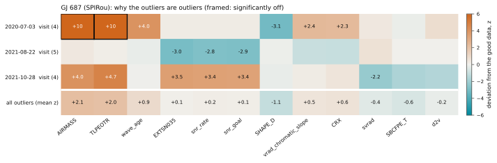
Proxima (NIRPS, données de l'équipe NIRPS) : 765 poses en 254 visites, la planète connue (11.1846 d) ajustée avec le mélange. 2 poses sont aberrantes : 1 visite entière et 0 pose isolée.
- 2023-06-28, une visite de 2 poses, à +30.7 m/s (12.4 sigma) du modèle, comparée aux bonnes visites les plus proches dans le temps : significativement décalé : décalage de l'image selon x (SHAPE_DX) -0.0641 contre -0.0237 (z -33.9) ; forme de l'image (SHAPE_A) 0.99999 contre 1 (z -14.5) ; forme de l'image (SHAPE_B) -1.44e-06 contre 8.27e-07 (z -5.9) ; forme de l'image (SHAPE_C) 1.17e-05 contre 5.08e-06 (z +5.0).
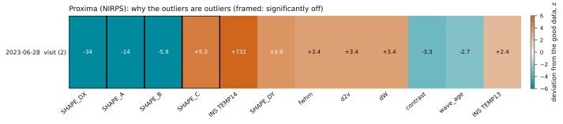
HD 69830 (HARPS, vitesses HARPS publiques de DACE) : 712 poses en 273 visites, les planètes connues (8.669, 31.62, 201 d) ajustées avec le mélange. 5 poses sont aberrantes : 0 visite entière et 5 poses isolées. Ce qu'elles ont en commun : la FWHM des raies, plus élevée chez les valeurs aberrantes (2 sur 5 au-delà de 2 sigma ; z moyen, écrêté à 3, +1.7 ; p = 0.002).
- 2003-10-31 09:02, une pose, à +6.6 m/s (11.5 sigma) du modèle, comparée aux bonnes visites les plus proches dans le temps : significativement décalé : dérive de la référence simultanée -0.00581 contre 3.56e-05 (z -14.1).
- 2006-12-06 07:38, une pose, à -4.2 m/s (5.7 sigma) du modèle, comparée aux autres poses de sa visite : rien de significativement décalé (les plus proches : indice H alpha, z +2.0).
- 2007-12-16 07:40, une pose, à +5.4 m/s (8.6 sigma) du modèle, comparée aux autres poses de sa visite : rien de significativement décalé.
- 2013-01-26 04:59, une pose, à +4.9 m/s (9.6 sigma) du modèle, comparée aux bonnes visites les plus proches dans le temps : significativement décalé : dérive de la référence simultanée 0.109 contre 0.000724 (z +261.0) ; bruit de la dérive de la référence 0.000832 contre 0.000157 (z +181.3) ; FWHM des raies 6.43e+03 contre 6.41e+03 (z +4.7).
- 2014-10-18 09:43, une pose, à -80.0 m/s (162.3 sigma) du modèle, comparée aux bonnes visites les plus proches dans le temps : significativement décalé : asymétrie de la CCF 0.0823 contre 0.0232 (z +163.3) ; contraste des raies 56.7 contre 59.9 (z -125.6) ; étendue du bissecteur -175 contre -64.2 (z -111.3) ; FWHM des raies 6.59e+03 contre 6.41e+03 (z +52.9).
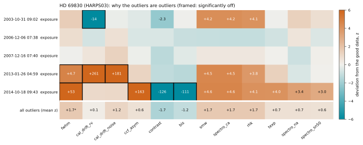
Dans votre code
Cas d'usage, sous forme de tests
Chaque page est un cas d'usage, rédigé comme un test : la question qu'il pose, les données, la commande qui l'exécute et les critères qu'une méthode correcte doit satisfaire, chacun vérifié sur les sorties de cette exécution et marqué RÉUSSI ou ÉCHEC (INFO lorsqu'il n'existe aucune vérité à laquelle se comparer). Viennent ensuite les résultats et les figures. Dans les cas simulés, la vérité est connue ; les étoiles réelles sont confrontées à ce que l'on sait d'elles. Sur l'ensemble des 15 cas d'usage, 35 critères sur 41 sont réussis.
- cas simulés
- Aucune planètekoloa signale-t-il une planète là où il n'y en a pas, lorsque certaines poses et certaines visites entières sont aberrantes ?2/2
- Une planète derrière des valeurs aberranteskoloa trouve-t-il une planète cachée derrière des valeurs aberrantes, et en mesure-t-il l'amplitude ?3/4
- Lois a posteriori des orbitesLes valeurs aberrantes biaisent-elles la loi a posteriori d'une orbite excentrique, et les intervalles de koloa sont-ils bien calibrés ?2/3
- Deux planètesL'échantillonneur de koloa trouve-t-il deux planètes à la fois, en présence de valeurs aberrantes ?2/3
- Activité et planèteUn ajustement conjoint de l'activité (un GP) et de l'orbite retrouve-t-il K, là où un GP ajusté d'abord, suivi d'une orbite ajustée à ses résidus, n'y parvient pas ?3/3
- Combien de valeurs aberrantesQuelle fraction de valeurs aberrantes un ajustement peut-il supporter ? Le mélange face à une loi de Student et aux moindres carrés.2/2
- Cartes de détectabilitéQuelles planètes une série aurait-elle permis de trouver, et le taux de fausses alarmes est-il bien celui annoncé ?2/2
- La campagneSur de nombreuses séries, à quelle fréquence chaque méthode signale-t-elle une fausse planète ou en trouve-t-elle une vraie, et ses probabilités disent-elles vrai ?2/3
- L'accélération d'une étoilePeut-on mesurer l'accélération d'une étoile (l'attraction d'un compagnon) en présence de valeurs aberrantes ?2/2
- étoiles réelles
- TOI-2120 bLa demi-amplitude K d'une planète en transit connue résiste-t-elle à un nombre croissant de mauvaises visites ?2/2
- HD 69830 via DACEkoloa retrouve-t-il les planètes connues d'une étoile à partir des vitesses publiques de tous les instruments qui l'ont observée, et les mesure-t-il conformément aux valeurs publiées ?6/6
- Kepler-21 bkoloa peut-il mesurer une petite planète en transit en présence d'activité stellaire ?1/1
- GL 725 A et BLes deux étoiles d'une binaire s'attirent-elles comme le prédisent leurs masses ?2/2
- Rotation à partir de DTEMPLa rotation d'une étoile peut-elle être mesurée à partir de son indicateur de température, de façon robuste, avec un GP ?3/4
- Naines M, PCA2DLe nettoyage des spectres par PCA2D est-il utile, et koloa retrouve-t-il les planètes connues de naines M comptant de nombreuses visites ?1/2
Une planète qui n'est pas là
python demos/demo_false_alarm.py- ✓ RÉUSSIkoloa ne signale aucune planète : aucun intervalle n'atteint une FIP < 1 %, dans aucune série.koloa : 0 sur 10 ; à titre de comparaison, FIP à gigue fixe : 1, écrêtage doux : 0, écrêtage dur : 0
- ✓ RÉUSSIIl repère les valeurs aberrantes nettes et épargne les bonnes poses.nettes : 13 sur 13, bonnes : 0 sur 155 (série présentée)
Aucune planète : du bruit sur un échantillonnage temporel réel de NIRPS, une gigue de visite de 2 m/s et des valeurs aberrantes des deux signes, nettes (visites entières et poses isolées écartées de six à huit fois l'erreur médiane) et limites (de deux à quatre fois). Sur 10 séries de ce type, la FIP à un seul signal avec gigue fixe signale une planète (FIP < 1 %) dans 1 d'entre elles, l'écrêtage doux dans 0, l'écrêtage dur dans 0 et koloa dans 0.
Série présentée : la première qui trompe la FIP à gigue fixe (graine 2), avec une « planète » à 15.01 d et une FIP de 5.3×10-3. Le meilleur intervalle de koloa a une FIP de 0.93. koloa repère 13 des 13 poses déplacées par des valeurs aberrantes nettes, 4 des 13 poses limites (leur probabilité moyenne de valeur aberrante est de 0.37) et 0 des 155 bonnes poses.
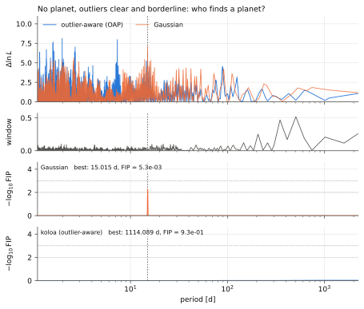
Chaque visite, jugée dans son ensemble
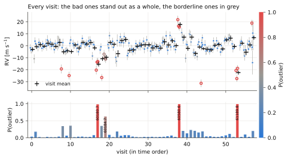
La couleur code la probabilité de valeur aberrante (bleu : fiable, gris : indécis, rouge : aberrant). Les points plus probablement aberrants que fiables sont en outre représentés par des symboles vides.
Une planète qui est bien là, derrière des valeurs aberrantes nettes et limites
python demos/demo_recovery.py- ✓ RÉUSSILe meilleur intervalle de la FIP de koloa correspond à la planète.16.58 d
- ✗ ÉCHECSa FIP passe sous le seuil de détection, FIP < 1%.koloa 1.1×10-2 ; la FIP à gigue fixe 1.00, l'écrêtage dur 4.2×10-3
- ✓ RÉUSSIL'intervalle à 68% de K contient la vraie valeur de K.K = 4.73 +0.67/−0.46 m/s ; l'orbite gaussienne 6.61 m/s
- ✓ RÉUSSILes valeurs aberrantes nettes sont signalées, les bonnes poses ne le sont pas.nettes 13 sur 13, bonnes 0 sur 155
K = 5 m/s à 16.65 d, derrière des valeurs aberrantes nettes et limites. La FIP de l'intervalle de la planète vaut 1.00 pour la FIP à gigue fixe, 1.00 après un écrêtage doux, 4.2×10-3 après un écrêtage dur et 1.1×10-2 pour koloa. koloa signale 13 des 13 poses décalées par des valeurs aberrantes nettes, 2 des 13 poses au décalage limite (leur probabilité moyenne d'être aberrantes vaut 0.23) et 0 des 155 bonnes poses. Son orbite donne K = 4.73+0.67−0.46 m/s ; l'orbite gaussienne, 6.61+1.72−1.11 m/s.
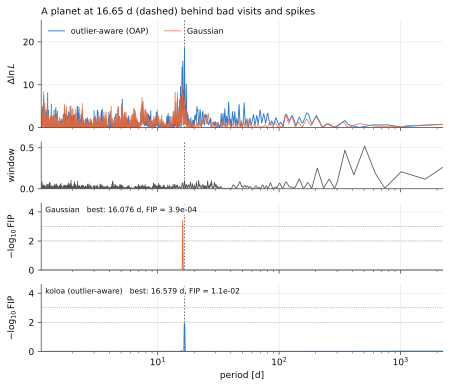
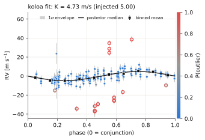
Ce que les valeurs aberrantes font à une orbite : lois a posteriori par MCMC
python demos/demo_posterior.py- ✓ RÉUSSIAvec les valeurs aberrantes, le K de koloa est sans biais : son erreur médiane est inférieure à son incertitude médiane.erreur médiane +0.29 m/s, incertitude 0.65 ; la vraisemblance gaussienne, +1.60 et 1.77
- ✓ RÉUSSISes intervalles à 68% contiennent les vraies valeurs de K et de e aussi souvent qu'ils le devraient (21 à 33 sur 40, intervalle à 2σ d'une loi binomiale).K 23, e 24
- ✗ ÉCHECLes erreurs se dispersent comme l'annoncent les incertitudes : le rms de (médiane − vraie valeur)/σ pour K vaut 1 (à 0.22 près).1.25 : les intervalles de K sont trop étroits, sur les séries propres aussi (cause non encore identifiée)
Une planète sur orbite excentrique (P = 11.2 d, K = 10 m/s, e = 0.3, ω = 60°) sur un échantillonnage NIRPS réel, avec des valeurs aberrantes nettes et limites. L'orbite est échantillonnée par MCMC (koloa.mcmc_orbits : emcee, exécuté jusqu'à ce que les chaînes couvrent 50 temps d'autocorrélation pour chaque paramètre) avec la vraisemblance gaussienne et avec le mélange de koloa.
Sans les valeurs aberrantes, les deux vraisemblances donnent la même loi a posteriori : K = 10.07+0.56−0.54 et 10.07+0.53−0.53 m/s, e = 0.302+0.050−0.050 et 0.299+0.050−0.050. Avec elles, la loi a posteriori gaussienne donne K = 9.57+2.04−1.98 m/s, e = 0.300+0.165−0.171 et ω = 39+50−43° ; celle de koloa, K = 9.76+0.49−0.49 m/s, e = 0.290+0.048−0.045 et ω = 73+12−11°.
Sur 40 réalisations avec valeurs aberrantes, l'intervalle à 68% de K contient la vraie valeur dans 20 cas pour la vraisemblance gaussienne et dans 23 pour koloa, et celui de e dans 24 et 24 cas (environ 27 attendus). La demi-largeur médiane de l'intervalle de K est de 1.77 et 0.65 m/s. Sur les mêmes séries sans valeurs aberrantes, les deux vraisemblances donnent pour K une couverture insuffisante (rms de (médiane − vraie valeur)/σ de 1.22 et 1.24) : les intervalles de K sont trop étroits d'environ 20%, un problème dont la cause n'est pas encore identifiée.
Un ajustement gaussien après un écrêtage itératif à 3 sigma de ses résidus se rapproche de koloa pour K (erreur médiane de +0.27 contre +0.29 m/s), mais ses intervalles à 95% manquent la vraie valeur de K dans 10 réalisations sur 40, celle de e dans 7 et la vraie période dans 6, contre 3, 0 et 1 pour koloa. L'écrêtage part d'une orbite que les valeurs aberrantes ont déjà déformée, et conserve les valeurs aberrantes nettes près desquelles passe cette orbite : les ajustements qui manquent K sont surtout ceux qui ont conservé des valeurs aberrantes nettes.
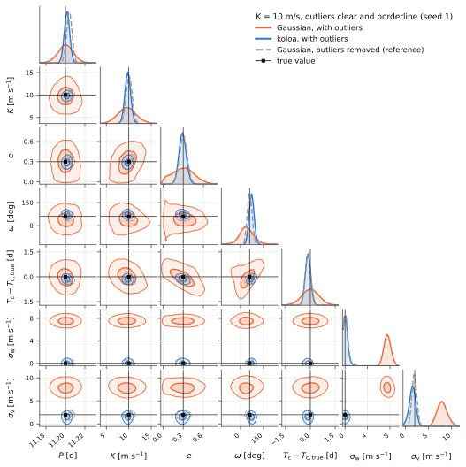
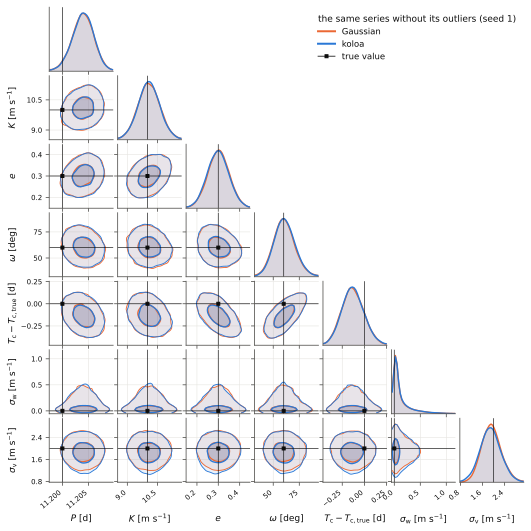
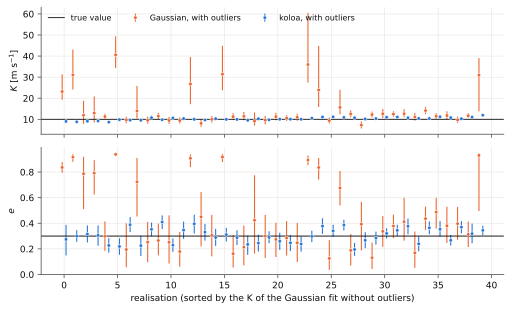
Deux planètes, un seul périodogramme FIP
python demos/demo_two_planets.py- ✓ RÉUSSIIl trouve deux signaux : P(k ≥ 2) > 0.9.0.99
- ✓ RÉUSSIChaque planète a une FIP plus faible avec koloa qu'avec la FIP gaussienne à un seul signal.4.31 d : 0.13 contre 1.00 ; 31.4 d : 1.3×10-3 contre 1.00
- ✗ ÉCHECPour chaque planète, FIP < 1%.4.31 d : 0.13 ; 31.4 d : 1.3×10-3
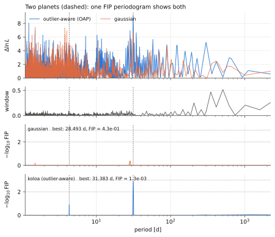
Deux planètes et des valeurs aberrantes, nettes et limites. La loi a posteriori du nombre de signaux donne P(k ≥ 2) = 0.99 ; la planète à 4.31 jours (K = 3.5 m/s) a une FIP de 0.13 avec koloa et de 1.00 avec la FIP gaussienne à un seul signal ; la planète à 31.4 jours (K = 4.5 m/s) a une FIP de 1.3×10-3 avec koloa et de 1.00 avec la FIP gaussienne à un seul signal.
L'activité et une planète, ajustées conjointement
python demos/demo_gp_joint.py- ✓ RÉUSSIL'ajustement conjoint retrouve K : la médiane sur les réalisations est à moins de 20% de la vraie valeur.4.51 m/s ; ses intervalles à 68% contiennent la vraie valeur dans 19 cas sur 30
- ✓ RÉUSSIL'ajustement séquentiel, à titre de comparaison, laisse le GP absorber la planète (médiane inférieure à 80% de la vraie valeur).1.80 m/s
- ✓ RÉUSSIAvec le GP, koloa signale les valeurs aberrantes nettes (90% ou plus).nettes 95%, limites 14%
Une étoile tachée tournant sur elle-même en 23 d, une planète de K = 4 m/s à 9.7 d, et des valeurs aberrantes nettes et limites. Avec la période du GP contrainte par un indicateur d'activité, l'ajustement conjoint donne K = 6.17+1.20−0.99 m/s et l'ajustement séquentiel (le GP d'abord, puis l'orbite sur le résidu) 1.87+0.56−0.25 m/s. Sur 4 réalisations supplémentaires, l'ajustement conjoint donne de 4.1 à 5.3 m/s et l'ajustement séquentiel de 1.9 à 3.8 m/s. koloa signale 6 des 16 poses décalées par des valeurs aberrantes nettes, 2 des 13 poses au décalage limite (leur probabilité moyenne d'être aberrantes vaut 0.17) et 0 des 152 bonnes poses.
Sur 30 réalisations supplémentaires, l'ajustement conjoint donne un K médian de 4.51 m/s (dispersion de 0.93), son intervalle à 68% contenant la vraie valeur dans 19 d'entre elles, contre 1.80 m/s pour l'ajustement séquentiel ; avec le GP, koloa signale 95% des poses nettement aberrantes et 14% des poses au décalage limite. Il s'agit d'ajustements au maximum a posteriori.
Ajuster d'abord un GP, puis une orbite sur ce qu'il laisse, ne constitue pas un ajustement conjoint : la fonction sequential_fit de koloa existe pour le montrer, et elle émet un KoloaWarning.
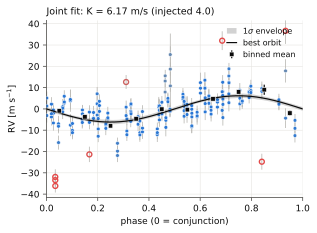
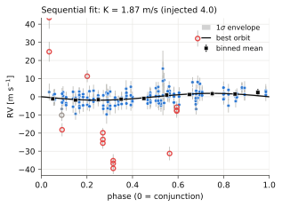
Combien de valeurs aberrantes un ajustement peut-il supporter ? La loi de Student face au mélange
python demos/demo_contamination.py- ✓ RÉUSSIAvec 40% de mauvaises visites, l'erreur sur K reste inférieure à 1 m/s avec le mélange.mélange 0.55 m/s ; gaussienne 57.4, Student 93.7
- ✓ RÉUSSIAvec 40% de mauvaises poses, l'erreur sur K reste inférieure à 1 m/s avec le mélange.mélange 0.65 m/s ; gaussienne 42.7, Student 40.8
polyband, une régression polynomiale, résiste aux valeurs aberrantes grâce à une vraisemblance de Student ; koloa offre la même option (likelihood='student'), et les deux concordent à trois décimales près. Le mélange est différent : une valeur aberrante signalée ne garde aucun poids. Sur un polynôme cubique avec des valeurs aberrantes des deux signes, de 3 à 30 sigma, l'erreur médiane de la courbe ajustée est, à 30% de valeurs aberrantes, de 1.30 sigma pour les moindres carrés, de 0.41 pour polyband et de 0.16 pour le mélange ; à 50%, de 1.27 et 0.27. Le mélange atteint 50% grâce à l'initialisation robuste qu'il emprunte à polyband : l'ajustement des 70 ou 50% de points les moins déviants.
Une orbite (K = 10 m/s) avec de mauvaises poses : à 20% de mauvaises poses, l'erreur médiane sur K est de 23.10 m/s pour la vraisemblance gaussienne, de 0.30 pour celle de Student et de 0.42 pour le mélange ; à 40%, de 42.70, 40.76 et 0.65.
Une orbite (K = 10 m/s) avec de mauvaises visites : à 20% de mauvaises visites, l'erreur médiane sur K est de 59.16 m/s pour la vraisemblance gaussienne, de 9.72 pour celle de Student et de 0.60 pour le mélange ; à 40%, de 57.42, 93.69 et 0.55.
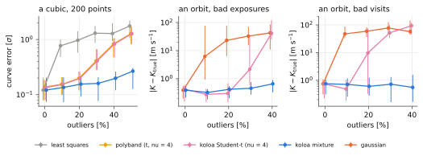
Ce qu'une série aurait pu trouver : taux de détection en période et en K
python demos/demo_completeness.py- ✓ RÉUSSILes fausses alarmes à K = 0 sont au taux nominal (1%, à 2σ près selon une loi binomiale).1.0% sur 400
- ✓ RÉUSSIAvec des valeurs aberrantes, koloa requiert un K plus faible que le repliement gaussien, à toutes les périodes.K retrouvé une fois sur deux à 8 d : 2.2 m/s contre 4.4 (sans les valeurs aberrantes, 1.5)
Des planètes sur orbite circulaire sont injectées sur une grille de périodes et de demi-amplitudes, puis recherchées par repliement en phase de la série à leur période (koloa.completeness) : un décalage et une sinusoïde y sont ajustés, avec une vraisemblance robuste aux valeurs aberrantes ou gaussienne, et une planète est comptée comme retrouvée quand le gain en log-vraisemblance dépasse le seuil de fausse alarme à 1% (4.6). Sur un échantillonnage NIRPS réel avec des valeurs aberrantes nettes et limites, et une nouvelle série par injection, K est retrouvé une fois sur deux à partir de 2.2 m/s à 10 d avec koloa, et à partir de 4.4 m/s avec le repliement gaussien ; sans les valeurs aberrantes, 1.5 et 1.5 m/s. Les injections à K = 0 déclenchent une détection dans 1.0% (koloa) et 1.0% (gaussien) des cas, pour un taux nominal de 1%.
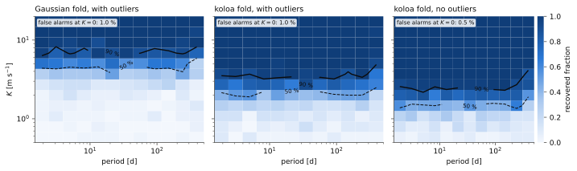
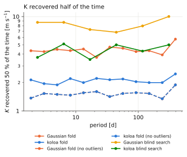
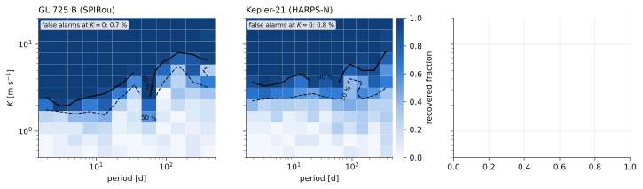
| série | poses | visites | K retrouvé une fois sur deux à 10 d | à 100 d | fausses alarmes à K = 0 |
|---|---|---|---|---|---|
| GL 725 B (SPIRou) | 959 | 237 | 1.7 m/s | 3.7 m/s | 0.7% |
| Kepler-21 (HARPS-N) | 98 | 77 | 2.4 m/s | 3.9 m/s | 0.8% |
À quelle fréquence : la campagne d'injection et de récupération
python paper/campaign.py- ✓ RÉUSSIAvec de mauvaises visites et sans planète, koloa annonce une planète (FIP < 1%) dans au plus 1 des 100 séries.koloa 0%, la FIP à gigue fixe 27%
- ✓ RÉUSSISes pics dont la TIP est comprise entre 0.90 et 0.99 sont réels dans au moins 90% des cas.58 sur 60 ; la FIP à gigue fixe 45 sur 136
- ✗ ÉCHECSur des séries propres, koloa détecte la planète aussi souvent que la FIP à gigue fixe, à FIP < 1%.koloa 11%, la FIP à gigue fixe 24% : la gigue de visite rend koloa conservateur
800 séries sur un échantillonnage NIRPS réel et ses barres d'erreur, chacune avec une gigue de visite de 2 m/s. Il y a huit cas : aucune planète ou une planète de K = 3 m/s, chaque fois sans valeurs aberrantes, avec 7% de mauvaises visites, avec des pics sur 4% des poses, ou avec des valeurs aberrantes limites, des deux signes. La FIP est calculée de sept façons sur chaque série (l'une d'elles sur les moyennes par visite, après regroupement préalable), et une détection correspond à FIP < 1%.
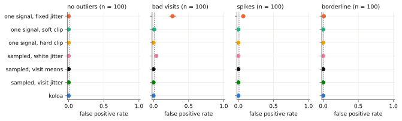
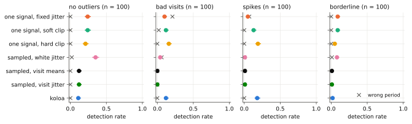
Les taux de détection seuls ne disent pas si l'on peut se fier aux probabilités d'une méthode ; la calibration, elle, le dit. Parmi les pics auxquels koloa attribue une TIP comprise entre 0.90 et 0.99, 97% (58 sur 60) sont de vraies planètes. Pour la FIP à gigue fixe, c'est 33% (45 sur 136).
Les méthodes trop confiantes échouent pour des raisons différentes. La FIP à gigue fixe échoue à cause des valeurs aberrantes : sur des séries propres, parmi ses pics de TIP comprise entre 0.90 et 0.99, 24 sur 28 sont réels, et avec de mauvaises visites, 2 sur 50. Le modèle à gigue blanche, qui ne diffère du modèle à gigue de visite que par le terme de visite, est trop confiant même sur des séries propres : parmi ces pics, seuls 16 sur 27 sont réels. La population simulée n'est la loi a priori d'aucune méthode ; c'est donc un test de robustesse, et non une preuve de calibration.
À FIP < 1%, les modèles avec gigue de visite sont conservateurs (sur des données propres, koloa détecte 11% des planètes, la FIP à gigue fixe 24%) ; le tableau ci-dessous compare donc les méthodes à taux de faux positifs égal : le seuil de chacune est fixé sur les séries vides du même cas. Dans ces conditions, koloa et un écrêtage dur à 3 sigma ont la même puissance dans tous les cas, et tous deux devancent largement les FIP gaussiennes en présence de valeurs aberrantes. Pour la seule détection, et avec des valeurs aberrantes aussi grandes, un écrêtage fait aussi bien ; koloa y ajoute une probabilité pour chaque pose et chaque visite, et des lois a posteriori qui ne dépendent pas d'une décision prise au préalable.
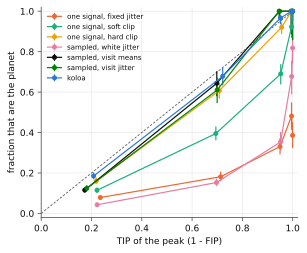
| détections à taux de faux positifs égal (aucun faux positif sur 100 séries vides) | propres | mauvaises visites | pics | limites |
|---|---|---|---|---|
| un seul signal, gigue fixe | 0.42 | 0.02 | 0.00 | 0.08 |
| un seul signal, écrêtage doux | 0.38 | 0.11 | 0.39 | 0.11 |
| un seul signal, écrêtage dur | 0.31 | 0.50 | 0.31 | 0.13 |
| échantillonnée, gigue blanche | 0.47 | 0.00 | 0.08 | 0.10 |
| échantillonnée, moyennes par visite | 0.53 | 0.00 | 0.06 | 0.07 |
| échantillonnée, gigue de visite | 0.56 | 0.00 | 0.06 | 0.07 |
| koloa | 0.39 | 0.54 | 0.40 | 0.12 |
| méthode | faux positifs (sans planète) | détections (K = 3 m/s) | ||||||
|---|---|---|---|---|---|---|---|---|
| propres | mauvaises visites | pics | limites | propres | mauvaises visites | pics | limites | |
| un seul signal, gigue fixe | 0% | 27% | 7% | 1% | 24% | 10% | 5% | 9% |
| un seul signal, écrêtage doux | 0% | 1% | 0% | 0% | 24% | 12% | 13% | 9% |
| un seul signal, écrêtage dur | 0% | 0% | 0% | 0% | 21% | 16% | 19% | 5% |
| échantillonnée, gigue blanche | 0% | 4% | 0% | 0% | 35% | 4% | 1% | 8% |
| échantillonnée, moyennes par visite | 0% | 0% | 0% | 0% | 12% | 0% | 1% | 1% |
| échantillonnée, gigue de visite | 0% | 0% | 0% | 0% | 12% | 0% | 1% | 1% |
| koloa | 0% | 0% | 0% | 0% | 11% | 12% | 18% | 2% |
L'accélération d'une étoile en présence de valeurs aberrantes
python demos/demo_secular.py- ✓ RÉUSSILes intervalles à 95 % donnés par koloa contiennent la vraie accélération aussi souvent qu'ils le doivent (entre 21 et 24 fois sur 24).23 sur 24
- ✓ RÉUSSISes intervalles sont presque aussi étroits que sans les valeurs aberrantes (à 50 % près).demi-largeur médiane de 0.38 m/s/yr, 0.32 sans les valeurs aberrantes, 0.97 pour la vraisemblance gaussienne avec celles-ci
Une accélération en présence de valeurs aberrantes : 24 séries sur un échantillonnage réel de NIRPS, chacune avec un compagnon qui accélère l'étoile de 2 m/s/yr, une planète de K = 3 m/s, une gigue de visite et des valeurs aberrantes, franches et limites, l'accélération étant ajustée conjointement avec la planète. La vraisemblance gaussienne la donne avec une demi-largeur médiane de 0.97 m/s/yr, koloa avec 0.38, et la vraisemblance gaussienne appliquée aux mêmes séries sans valeurs aberrantes avec 0.32 ; leurs intervalles à 95 % contiennent la vraie valeur dans 22, 23 et 24 cas sur 24 (68 % : 14, 18 et 17).
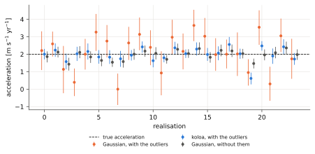
TOI-2120 b : la même planète face à de plus en plus de mauvaises visites
python demos/demo_toi2120.py- ✓ RÉUSSISur la série telle qu'observée, koloa et la vraisemblance gaussienne s'accordent sur K (aux incertitudes près).koloa 5.1 ± 1.1, gaussienne 4.8 ± 1.5 m/s
- ✓ RÉUSSIAvec 20 % de mauvaises visites, la dispersion du K de koloa d'une réalisation à l'autre ne dépasse pas 1.5 fois son incertitude.1.2 m/s contre 1.1 ; gaussienne 4.6
Il s'agit de la série SPIRou réelle de TOI-2120, nettoyée par PCA2D (version nominale du 2026-09-26) et mesurée par LBL. Elle compte 316 poses en 81 visites, pour la plupart des séquences polarimétriques de quatre poses, et deux saisons séparées par la lacune annuelle de 188 jours propre à la cible. La planète transite (Hori et al. 2024), si bien que la période et l'instant de conjonction font l'objet de lois a priori ; l'activité est modélisée par un GP de Matérn-3/2 d'une longueur de corrélation d'environ 50 jours. De mauvaises visites sont ensuite ajoutées à la série réelle, sans jamais en modifier l'échantillonnage : d'abord d'amplitude croissante, puis en nombre croissant.
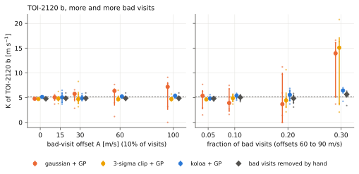
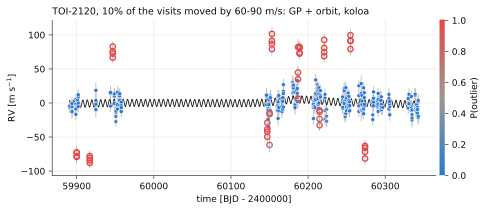
Dans la série telle qu'observée, koloa signale 4 visites, à BJD 2460147.1 (-40 m/s), 2460150.1 (-26 m/s), 2460186.9 (+35 m/s) et 2460214.9 (-27 m/s). Une fois celles-ci écartées, l'amplitude du GP passe de 8.3 à 3.6 m/s et la gigue de visite de 7.9 à 5.7 m/s, et K = 5.1 ± 1.1 m/s (vraisemblance gaussienne : 4.8 ± 1.5). Avec 20 % des visites décalées de 60 à 90 m/s, la dispersion du K gaussien d'une réalisation à l'autre est de 4.6 m/s, et celle du K de koloa de 1.2. À 30 %, les mauvaises visites forment une population comparable à celle des bonnes, et koloa se rabat parfois sur la réponse gaussienne.
HD 69830 via DACE : trois planètes connues, tous les instruments, récupération et ajustement
python demos/demo_dace.py --target HD69830 --host "HD 69830"- ✓ RÉUSSILa FIP retrouve HD 69830 b (8.67 d) : un intervalle de FIP < 1 % à moins de 5 % de sa période.8.672 d, FIP 6.0×10-59
- ✓ RÉUSSILa FIP retrouve HD 69830 c (31.56 d) : un intervalle de FIP < 1 % à moins de 5 % de sa période.31.626 d, FIP 5.5×10-53
- ✓ RÉUSSILa FIP retrouve HD 69830 d (197.00 d) : un intervalle de FIP < 1 % à moins de 5 % de sa période.200.952 d, FIP 6.7×10-25
- ⓘ INFOUn autre intervalle de FIP < 1 % ?aucun
- ✓ RÉUSSILe K de HD 69830 b concorde avec sa valeur publiée la plus récente, Harada et al. 2025 (à 2σ près).3.37 ± 0.08 m/s contre 3.50 ± 0.17 (0.7σ) ; Rosenthal et al. 2021 : 3.48 ± 0.20 (0.5σ) ; Lovis et al. 2006 : 3.51 ± 0.15 (0.8σ)
- ✓ RÉUSSILe K de HD 69830 c concorde avec sa valeur publiée la plus récente, Harada et al. 2025 (à 2σ près).2.47 ± 0.09 m/s contre 2.43 ± 0.16 (0.2σ) ; Rosenthal et al. 2021 : 2.18 ± 0.20 (1.3σ) ; Lovis et al. 2006 : 2.66 ± 0.16 (1.0σ)
- ✓ RÉUSSILe K de HD 69830 d concorde avec sa valeur publiée la plus récente, Harada et al. 2025 (à 2σ près).1.74 ± 0.09 m/s contre 1.59 ± 0.18 (0.7σ) ; Rosenthal et al. 2021 : 1.68 ± 0.21 (0.3σ) ; Lovis et al. 2006 : 2.20 ± 0.19 (2.2σ)
DACE fournit 886 vitesses publiques de HD 69830 en 336 visites sur 19.4 ans, issues de 5 époques instrumentales (tableau). koloa ajuste le bruit de chacune (une gigue blanche et une gigue de visite), gonfle les erreurs de chacune en conséquence (koloa.fip.inflate_to_fit : l'échantillonneur de la FIP n'a qu'une seule gigue pour toutes) et calcule la FIP avec jusqu'à 4 signaux. Avec le bruit ajusté sans planètes, les intervalles de FIP < 1 % se trouvent à 31.63 d (1.8×10-10), 8.67 d (6.7×10-9) et 201.52 d (1.1×10-3). Ces planètes sont ensuite ajustées ensemble par MCMC, chaque instrument avec son décalage, ses gigues et ses valeurs aberrantes, et la FIP est recalculée avec le bruit de cet ajustement : 8.67 d (6.0×10-59), 31.63 d (5.5×10-53) et 200.95 d (6.7×10-25) ; le nombre k de signaux a pour probabilités P(k) = 0.00, 0.00, 0.00, 0.22, 0.78 pour k = 0 à 4. Le K de chaque planète est confronté à toutes les solutions que recense la NASA Exoplanet Archive, de la plus récente à la plus ancienne (tableau) : la solution par défaut de l'archive est celle de l'article de découverte, fondée sur bien moins de vitesses que n'en fournit aujourd'hui DACE.
| instrument | vitesses | visites | années | erreur médiane [m/s] | gigue blanche [m/s] | gigue de visite [m/s] | signalées |
|---|---|---|---|---|---|---|---|
| HARPS03 | 712 | 273 | 2003.8 à 2015.3 | 0.33 | 0.44 | 1.14 | 4 |
| HARPS03_EGGS | 9 | 1 | 2007.1 à 2007.1 | 16.26 | 7.72 | 0.00 | 0 |
| HARPS15 | 43 | 21 | 2015.8 à 2020.0 | 0.40 | 0.36 | 0.84 | 1 |
| ESPRESSO18 | 44 | 15 | 2018.8 à 2019.3 | 0.10 | 0.19 | 0.57 | 1 |
| ESPRESSO19 | 78 | 26 | 2019.9 à 2023.2 | 0.10 | 0.20 | 0.93 | 0 |
| planète | P [d] | K [m/s] | e | m sin i [masses terrestres] | K publiés [m/s] |
|---|---|---|---|---|---|
| HD 69830 b | 8.6691+0.0001−0.0001 | 3.37+0.08−0.08 | 0.00+0.00−0.00 | 9.8+0.2−0.2 | 3.50 ± 0.17 (Harada et al. 2025) 3.48 ± 0.20 (Rosenthal et al. 2021) 3.51 ± 0.15 (Lovis et al. 2006) |
| HD 69830 c | 31.6187+0.0030−0.0031 | 2.47+0.09−0.09 | 0.00+0.00−0.00 | 11.1+0.4−0.4 | 2.43 ± 0.16 (Harada et al. 2025) 2.18 ± 0.20 (Rosenthal et al. 2021) 2.66 ± 0.16 (Lovis et al. 2006) |
| HD 69830 d | 201.6030+0.1391−0.1455 | 1.74+0.09−0.09 | 0.00+0.00−0.00 | 14.4+0.7−0.7 | 1.59 ± 0.18 (Harada et al. 2025) 1.68 ± 0.21 (Rosenthal et al. 2021) 2.20 ± 0.19 (Lovis et al. 2006) |
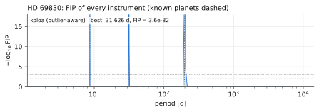
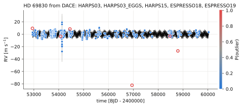
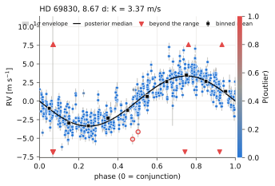
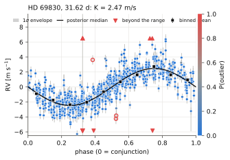
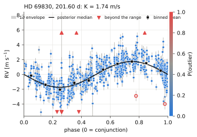
Kepler-21 b avec HARPS-N : une petite planète en transit sur fond d'activité
python demos/demo_kepler21.py- ⓘ INFOLa planète est-elle détectée à l'aveugle, sans son éphéméride ?non : FIP de koloa de 0.97 à sa période
- ✓ RÉUSSIAvec l'éphéméride et le GP, K concorde avec Bonomo et al. 2023 (à 1σ près).2.66 ± 0.47 m/s contre 2.70 ± 0.46 (Lopez-Morales et al. 2016 : 1.99 ± 0.65)
Kepler-21 (HD 179070) est une sous-géante F6 IV hôte d'une super-Terre en transit de période 2.786 d. Ses vitesses HARPS-N publiques (DACE, 98 poses en 77 visites sur 5.4 ans) présentent une dispersion de 6.4 m/s, bien au-delà de leurs erreurs de 1.39 m/s : c'est l'activité. Aucune FIP à l'aveugle ne détecte la planète (FIP de koloa de 0.97 à sa période). Avec l'éphéméride issue des transits, un GP dont la période de rotation (12.7 d) provient de l'indice S, et l'accélération de perspective, l'ajustement conjoint donne Kb = 2.66+0.48−0.45 m/s avec koloa et 2.62+0.47−0.46 m/s avec une vraisemblance gaussienne (m sin i = 7.3+1.3−1.3 masses terrestres), contre 1.99 ± 0.65 (Lopez-Morales et al. 2016) et 2.70 ± 0.46 (Bonomo et al. 2023).
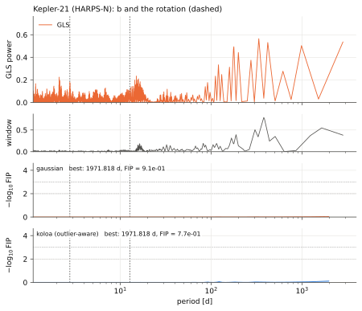
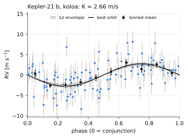
GL 725 A et B avec SPIRou : chaque étoile attirée par l'autre
python demos/demo_gl725b.py; python demos/demo_secular.py- ✓ RÉUSSILes deux étoiles accélèrent en sens opposés.B -4.78, A +4.80 m/s/yr
- ✓ RÉUSSILe rapport des accélérations est celui des masses (à 2σ près).−aA/aB = 1.00 ± 0.14 contre MB/MA = 0.764 (1.7σ)
GL 725 B (SPIRou, 959 poses en 237 visites sur 6.7 ans) dérive de -4.78+0.21−0.21 m/s/yr, et GL 725 A en sens inverse, de 4.80+0.64−0.64 m/s/yr. Leurs accélérations de perspective (d'après Gaia DR3, 0.440 m/s/yr pour B et 0.399 pour A) sont déjà retirées de ces vitesses : APERO calcule la correction barycentrique avec barycorrpy, auquel sont fournis le mouvement propre et la parallaxe de chaque étoile. Ce qui dérive, c'est l'attraction de chaque étoile sur l'autre. Le rapport des deux accélérations, −aA/aB = 1.00+0.14−0.14, devrait être celui des masses, MB/MA = 0.764 d'après la relation masse-luminosité de Mann et al. (2019) : les deux diffèrent de 1.7 sigma, et une dérive de +0.65 m/s/yr commune aux deux séries comblerait l'écart. Retirer une seconde fois les accélérations de perspective aurait donné 0.84+0.13−0.13.
Une fois la dérive retirée, l'analyse complète de koloa trouve son meilleur intervalle à 185.15 d avec FIP = 1.1×10-4 et signale 12 poses ; le test du canard rend le verdict « NOT A PLANET (activity or systematics more likely): significance, indicators ».
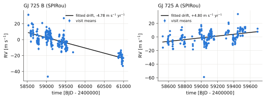
Ce que GL 725 A et B exigent l'une de l'autre : à leur séparation Gaia DR3 de 11.56 arcsec (40.7 au à 3.523 pc), l'accélération de B requiert un compagnon d'au moins 0.110 M☉, et celle de A un compagnon d'au moins 0.111 M☉, quelle que soit l'orbite (Torres 1999) ; A a une masse de 0.333 et B de 0.254 M☉. Ensemble, les deux accélérations et les masses placent les étoiles à 6 ou 94 au l'une de l'autre le long de la ligne de visée, A devant B.
| étoile | parallaxe [mas] | mouvement propre [mas/yr] | accélération de perspective [m/s/yr] | dérive sur sa série [m/s] |
|---|---|---|---|---|
| GJ 699 | 546.98 | 10393 | 4.5388 ± 3.2e-04 | |
| TOI-2120 | 31.07 | 374 | 0.1036 ± 6.1e-05 | 0.13 |
| GJ 725 A | 283.84 | 2221 | 0.3994 ± 3.3e-05 | |
| GJ 725 B | 283.84 | 2330 | 0.4396 ± 4.7e-05 | 2.96 |
| Kepler-21 | 9.22 | 40 | 0.0040 ± 9.2e-06 | 0.02 |
L'expression « accélération séculaire » a deux sens : l'accélération de l'étoile elle-même, traitée ci-dessus, qui se mesure, et l'accélération de perspective, μ2d, qui relève de la géométrie et se déduit de Gaia (tableau). Vérifiez d'abord si les vitesses contiennent encore l'accélération de perspective. Une correction barycentrique à laquelle on fournit le mouvement propre et la parallaxe de l'étoile la retire : c'est le cas de barycorrpy (éq. 28 de Wright & Eastman 2014), et APERO, qui réduit les données SPIRou et NIRPS, lui fournit l'astrométrie Gaia de chaque cible. Ajouter le terme de koloa aux vitesses d'APERO le compterait deux fois ; les vitesses SPIRou de l'étoile de Barnard dérivent de 1.2 m/s/yr, et non de ses 4.5. Ce terme est destiné aux vitesses dont la correction barycentrique ignore le mouvement de l'étoile.
GJ 687 : la rotation d'après son indicateur de température, avec un GP robuste
python demos/demo_rotation.py --nsteps 16000 --nreal 6 --ncpu 9- ✓ RÉUSSILe périodogramme de DTEMP3500 robuste aux valeurs aberrantes retrouve la rotation de la photométrie (Burt et al. 2014, 60 d) à 5 % près.61.75 d
- ✓ RÉUSSIUn autre indicateur, la FWHM des raies, culmine à la même période (à 5 % près).62.40 d
- ✗ ÉCHECLa période à laquelle culmine la puissance du SHO concorde avec la photométrie à 2σ près.43.0 ± 6.4 d, à 2.5σ de 60 d (le SHO a Q = 1.2)
- ✓ RÉUSSIRobuste : avec 10 % de visites rendues mauvaises, la période de koloa reste à 1σ de celle de la série propre dans au moins 5 réalisations sur 6.koloa 5 sur 6 ; la vraisemblance gaussienne 0
- ⓘ INFOCombien de valeurs de DTEMP koloa signale-t-il ?0 sur 852 ; la loi a posteriori gaussienne de la période 43.1 ± 6.3 d
Le périodogramme de DTEMP3500 robuste aux valeurs aberrantes culmine à 61.75 d (ΔlnL = 120.7), le périodogramme gaussien à 61.75 d, et celui de la FWHM des raies à 62.40 d. Un GP SHO a une amplitude, une période non amortie P0 et un facteur de qualité Q, maintenu au-dessus de Q = 1 : une rotation est quasi périodique, et sous Q = 1/√2 la puissance d'un SHO n'a pas de pic. Laissé libre jusqu'à Q = 0.3, le maximum a posteriori tombe à Q = 0.78 et P0 = 32.3 d, sa puissance culminant à 78.4 d ; son log a posteriori est plus élevé de 0.1 qu'avec Q au-dessus de 1. Ajusté à DTEMP3500 par MCMC avec la vraisemblance de koloa, il donne P0 = 35.1+4.9−4.1 d et Q = 1.24+0.34−0.17 ; sa puissance culmine à P0/√(1 − 1/2Q2) = 43.0+6.8−5.9 d, la période à comparer à un périodogramme et aux 60 d de la photométrie (Burt et al. 2014). koloa signale 0 des 852 valeurs comme aberrantes. Avec une vraisemblance gaussienne, le pic est à 43.1+6.8−5.8 d. C'est 2.5σ sous la rotation de la photométrie et les pics des périodogrammes : pour cette étoile, un seul oscillateur amorti de Q voisin de 1.2 décrit mal la rotation, que les périodogrammes de DTEMP3500 et de la FWHM trouvent sans lui. Un noyau plus fin (un oscillateur à P et un à P/2, ou un noyau quasi périodique) serait le test suivant.
Avec 10 % des visites décalées de 4 à 8 fois la dispersion de DTEMP3500, sur 6 réalisations (maximum a posteriori), la période de koloa reste à 1σ de celle de la série propre dans 5 cas, et celle de la vraisemblance gaussienne dans 0.
| paramètre | koloa | gaussienne |
|---|---|---|
| P0 [d] | 35.1+4.9−4.1 | 35.1+4.8−4.1 |
| pic de la puissance [d] | 43.0+6.8−5.9 | 43.1+6.8−5.8 |
| Q | 1.24+0.34−0.17 | 1.22+0.34−0.16 |
| σ [K] | 1.61+0.19−0.17 | 1.59+0.19−0.16 |
| gigue blanche [K] | 0.00+0.02−0.00 | 0.01+0.02−0.00 |
| gigue de visite [K] | 0.41+0.05−0.05 | 0.42+0.04−0.04 |
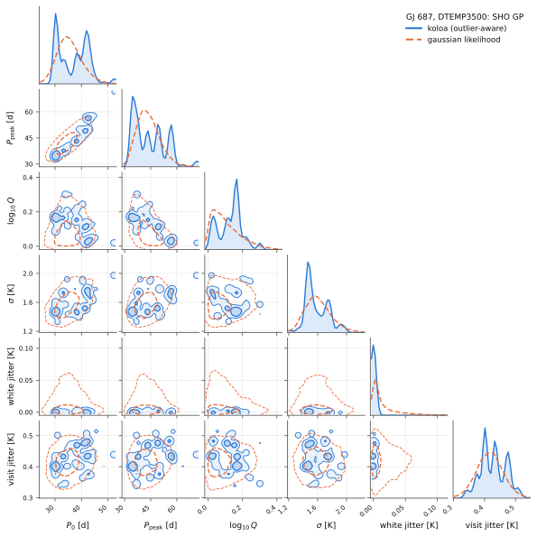
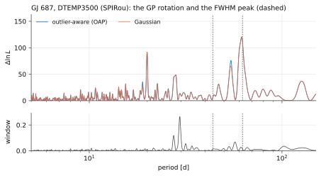
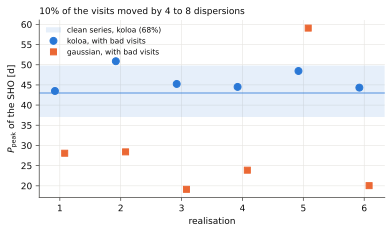
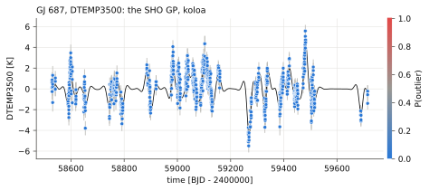
Trois naines M comptant plus de 150 visites, nettoyées par PCA2D
python demos/demo_mdwarfs.py- ✓ RÉUSSILes planètes connues retrouvent leur K publié, à 2σ près.GJ 687 b : 5.53 ± 0.43 contre 6.14 ± 0.32 m/s ; Proxima b : 0.95 ± 0.26 contre 1.23 ± 0.06 m/s
- ✗ ÉCHECPCA2D réduit la dispersion des visites de chaque étoile.GJ 687 6.85 → 6.16 ; Proxima 2.02 → 2.71 ; étoile de Barnard 3.80 → 4.32 m/s
GJ 687 et l'étoile de Barnard avec SPIRou, Proxima avec NIRPS, trois des naines M comptant plus de 150 visites sur les machines de réduction de Montréal : leurs spectres corrigés de l'absorption tellurique, nettoyés par pca2d-preclean (aucune composante dans le référentiel de l'étoile, sept dans celui de l'observateur) et mesurés par LBL, les spectres tels que livrés étant mesurés en parallèle, puis analysés par koloa : les périodogrammes FIP et le test du canard, la planète connue qu'il peut voir, ajustée par MCMC avec une tendance linéaire, la dérive mesurée à partir des seules vitesses (la correction barycentrique d'APERO a déjà retiré l'accélération de perspective), et ce que chaque série aurait pu trouver.
GJ 687 (SPIRou, spectres nettoyés par PCA2D) : le meilleur intervalle de l'analyse se trouve à 38.25 d, avec une FIP de koloa de 1.3×10-12, et le test du canard rend le verdict « PLANET CANDIDATE » ; 9 poses sont signalées. La dérive restant dans les vitesses est de 0.37+0.53−0.51 m/s/yr : APERO a déjà retiré l'accélération de perspective (0.179 m/s/yr d'après Gaia).
Proxima (NIRPS, spectres nettoyés par PCA2D) : le meilleur intervalle de l'analyse se trouve à 91.00 d, avec une FIP de koloa de 8.2×10-7, et le test du canard rend le verdict « INCONCLUSIVE » ; 2 poses sont signalées. La dérive restant dans les vitesses est de -0.21+0.15−0.15 m/s/yr : APERO a déjà retiré l'accélération de perspective (0.446 m/s/yr d'après Gaia). Avec un GP de la rotation ajusté aux moyennes par visite, la planète connue a K = 1.19+0.11−0.11 m/s (spectres livrés) et 1.04+0.13−0.13 m/s (PCA2D). Avec l'ajustement de la FWHM contraint entre 75 et 110 d, autour de la rotation publiée (loi a priori à 77 et 78 d au lieu de 70 et 71 d), K = 1.19+0.12−0.12 m/s (spectres livrés) et 1.03+0.14−0.13 m/s (PCA2D) : la planète n'en dépend pas.
L'étoile de Barnard (SPIRou, spectres nettoyés par PCA2D) : le meilleur intervalle de l'analyse se trouve à 2870.07 d, avec une FIP de koloa de 3.0×10-2, et le test du canard rend le verdict « NOT DETECTED » ; 7 moyennes par visite sont signalées. La dérive restant dans les vitesses est de 1.21+0.09−0.09 m/s/yr : APERO a déjà retiré l'accélération de perspective (4.539 m/s/yr d'après Gaia).
| étoile | instrument | poses / visites | dispersion des visites, spectres livrés | dispersion des visites, PCA2D | planète connue : K koloa (PCA2D) | K koloa (spectres livrés) | K gaussien | publié | dérive résiduelle (vitesses) | de perspective (Gaia, retirée par APERO) | K retrouvé une fois sur deux, 10 d |
|---|---|---|---|---|---|---|---|---|---|---|---|
| GJ 687 | SPIRou | 852 / 214 | 6.85 | 6.16 | b : 5.53+0.42−0.43 m/s | 6.59+0.40−0.42 | 5.39+0.53−0.52 | 6.14 ± 0.32 | 0.37+0.53−0.51 m/s/yr | 0.179 | 1.7 m/s |
| Proxima | NIRPS | 765 / 254 | 2.02 | 2.71 | b : 0.95+0.28−0.25 m/s | 1.18+0.15−0.16 | 11.18+1.07−1.07 (e = 0.95) | 1.23 ± 0.06 | -0.21+0.15−0.15 m/s/yr | 0.446 | 0.7 m/s |
| Étoile de Barnard | SPIRou | 2093 / 495 | 3.80 | 4.32 | 1.21+0.09−0.09 m/s/yr | 4.539 | 0.8 m/s |
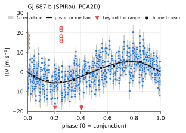
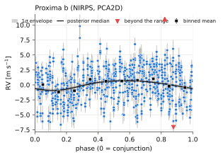
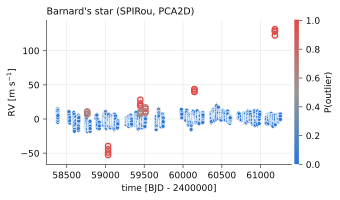
Chaque module, par l'exemple
Un court script par module, exécuté depuis la racine du dépôt comme indiqué. Sous chaque script apparaît ce qu'il a affiché et, pour certains, la figure qu'il a enregistrée. Les scripts se trouvent dans docs/examples/.
koloa.dataLire une sériekoloa.simulateSimuler une série avec des planètes et des valeurs aberrantes connueskoloa.periodogramPériodogrammes qui tiennent compte des valeurs aberranteskoloa.fipLa probabilité d'inclusion fausse robuste aux valeurs aberranteskoloa.fitÉléments orbitaux par MCMCkoloa.instrumentsPlusieurs instruments : une planète, un bruit propre à chacunkoloa.diagnosticsLe test du canardkoloa.outliersPourquoi une valeur aberrante est aberrantekoloa.plottingFigures colorées selon la fiabilitékoloa.analyzeTout en un seul appel, et la commande koloakoloa.completenessLes planètes qu'une série aurait pu trouverkoloa.secularL'accélération d'une étoile, avec son incertitudekoloa.gpProcessus gaussiens pour l'activité stellairekoloa.keplerOrbites képlérienneskoloa.weightsÉcrêtages, avec leur bilankoloa.radvel_bridgeLes valeurs aberrantes de koloa dans radvelkoloa.dopplerDécalages Doppler relativisteskoloa.logLe journalkoloa.noiseLe modèle de bruit : blocs par visite et mélange pour les valeurs aberranteskoloa.linearL'évidence analytique des modèles linéaires
koloa.data Lire une série
RVData lit un fichier .rdb de LBL ou un fichier csv, regroupe les poses en visites d'après les écarts de temps qui les séparent, et conserve les indicateurs d'activité à côté des vitesses.
# numpy, and koloa's series (RVData) and log (timestamped lines, 'value'
# for a number)
from pathlib import Path
import numpy as np
from koloa.data import RVData
from koloa.log import log
# the repository root: this file sits two levels down, in docs/examples
ROOT = Path(__file__).resolve().parents[2]
# the public HARPS-N velocities of Kepler-21, from DACE (the lines that
# start with # are skipped)
# rjd, vrad and svrad are found by name; every other column with an error
# column next to it becomes an indicator (fwhm with sfwhm, smw with
# ssmw, ...)
# the exposures fall into visits: a gap of more than 0.3 day (the
# argument sequence_gap) starts a new one; times in days, velocities and
# errors in m/s
data = RVData.from_csv(ROOT / 'data' / 'kepler21_harpsn_dace_drs3.3.12.csv',
name='Kepler-21')
# npoints, nseq (the visits), baseline [days], median_err, rms and
# robust_rms (1.4826 times the median absolute deviation) [m/s]
summ = data.summary()
log(f'{data.name}: {summ["npoints"]} exposures in {summ["nseq"]} visits '
f'over {summ["baseline"]:.0f} days', 'value')
log(f'median error {summ["median_err"]:.2f} m/s, rms {summ["rms"]:.2f} m/s, '
f'robust rms {summ["robust_rms"]:.2f} m/s', 'value')
# the median velocity of each instrument is taken out and kept in
# zero_point; a file without an instrument column holds one instrument,
# named 'inst'
log(f'zero point taken out: {data.zero_point["inst"]:.1f} m/s', 'value')
# data.seq: the visit of each exposure (0, 1, ... in time order)
sizes = np.bincount(data.seq)
log(f'exposures per visit: {sizes.min()} to {sizes.max()}, median '
f'{np.median(sizes):.0f}', 'value')
# the names of the indicators; each holds its values and their errors
log(f'indicators: {", ".join(data.indicators)}')
# one point per visit: the weighted mean of its exposures
# (with the formal error of that mean)
visits = data.binned()
log(f'binned: {visits.n} points, median error {np.median(visits.err):.2f} '
f'm/s', 'value')
# the first 250 days only (the visits are renumbered)
# select takes a boolean mask or indices and returns a copy
first = data.select(data.time < data.time[0] + 250)
log(f'first 250 days: {first.n} exposures in {first.nseq} visits', 'value')
# an indicator as a series of its own, ready for any koloa tool
# (its median taken out, the points without a value or an error dropped);
# fwhm: the width of the cross-correlation function [m/s]
fwhm = data.indicator('fwhm')
log(f'{fwhm.name}: {fwhm.n} points, robust rms '
f'{fwhm.summary()["robust_rms"]:.2f} m/s', 'value')
# the same times with other values: the residual of a straight line
# tref: the reference time of trends and phases, the mean time [days];
# numpy's polyfit takes its weights as 1/sigma
tt = data.time - data.tref
coeffs = np.polyfit(tt, data.rv, 1, w=1 / data.err)
# with_values: a copy with the same times, visits and errors
resid = data.with_values(data.rv - np.polyval(coeffs, tt))
# the slope is in m/s per day
log(f'trend {365.25 * coeffs[0]:+.2f} m/s per year, residual robust rms '
f'{resid.summary()["robust_rms"]:.2f} m/s', 'value')260929 08:41:01.78 | Kepler-21: 98 exposures in 77 visits over 1972 days260929 08:41:01.78 | median error 1.39 m/s, rms 6.44 m/s, robust rms 6.00 m/s260929 08:41:01.78 | zero point taken out: -19318.7 m/s260929 08:41:01.78 | exposures per visit: 1 to 2, median 1260929 08:41:01.78 | indicators: fwhm, bis, contrast, smw, rhk, halpha260929 08:41:01.78 | binned: 77 points, median error 1.23 m/s260929 08:41:01.78 | first 250 days: 45 exposures in 40 visits260929 08:41:01.78 | Kepler-21 fwhm: 98 points, robust rms 9.66 m/s260929 08:41:01.78 | trend -2.88 m/s per year, residual robust rms 4.33 m/s
koloa.simulate Simuler une série avec des planètes et des valeurs aberrantes connues
simulate conserve les dates, les visites et les barres d'erreur d'une série réelle, ajoute des orbites, une gigue de visite et des valeurs aberrantes tirées de recettes toutes faites, et renvoie les valeurs vraies à côté des données.
# numpy, and koloa's figures, series, log (timestamped lines, 'value' for
# a number) and simulation
from pathlib import Path
import numpy as np
from koloa import plotting as kplot
from koloa.data import RVData
from koloa.log import log
from koloa.simulate import REALISTIC, simulate
# the repository root: this file sits two levels down, in docs/examples
ROOT = Path(__file__).resolve().parents[2]
# REALISTIC = CLEAR + BORDERLINE: bad visits and spikes, far and near
# each recipe is a dict: kind ('visit': the exposures of a visit move
# together; 'spike': one exposure alone), frac (of the visits, or of the
# exposures), amplitude in median errors (a number: that times 1 + E, E
# exponential of mean 0.5; a (low, high) pair: uniform in it) and label
for rec in REALISTIC:
amp, unit = rec['amplitude'], ('visits' if rec['kind'] == 'visit'
else 'exposures')
# np.ndim is 0 for a number, 1 for a (low, high) pair
size = f'{amp[0]} to {amp[1]}' if np.ndim(amp) else f'{amp}+'
log(f'recipe {rec["label"]:10s} {rec["kind"]:5s} {rec["frac"]:.0%} of '
f'the {unit}, off by {size} median errors')
# a real sampling and its error bars make the most honest injection
# template: the times, visits, error bars and instrument of a real NIRPS
# series are kept, and its velocities (all zero in this file) replaced
tpl = RVData.from_csv(ROOT / 'data' / 'nirps_template.csv',
name='NIRPS template')
# an eccentric planet: P [days], K [m/s], e and omega [rad], and with no
# tp the periastron falls on the first time of the series; the recipes
# above; a 2 m/s jitter shared by the exposures of each visit; seed: the
# random draws; name: the name of the series
sim = simulate(planets=[dict(P=16.65, K=5.0, e=0.2, omega=1.0)],
template=tpl, outliers=REALISTIC, visit_jitter=2.0, seed=10,
name='NIRPS sampling')
# the truth next to the data: which exposures were made outliers
data, mask = sim['data'], sim['outlier_mask']
log(f'{data.n} exposures in {data.nseq} visits, {mask.sum()} made outliers',
'value')
# outlier_label: the recipe of each exposure ('' when good), and
# outlier_offset: what was added to it [m/s]
for label in ('clear', 'borderline'):
sel = sim['outlier_label'] == label
log(f' {label:10s} {sel.sum():2d} exposures in '
f'{len(np.unique(data.seq[sel]))} visits, median shift '
f'{np.median(np.abs(sim["outlier_offset"][sel])):.1f} m/s', 'value')
# signal: the velocity of the orbits alone at each exposure [m/s]
log(f'rms of the orbit {np.std(sim["signal"]):.2f} m/s, of the data '
f'{np.std(data.rv):.2f} m/s', 'value')
# no template: seasons, one visit a night, two exposures back to back,
# and a flare that decays over the next visits
# err: the error bar [m/s], each drawn between 0.8 and 1.2 times it;
# nvisits, per_visit and baseline [days] shape the campaign; a flare
# starts at 5 % of the visits, 6 median errors or more, and fades with
# an e-folding time of 0.5 to 3 days
free = simulate(planets=[dict(P=5.2, K=3.0)], err=1.5, nvisits=40,
per_visit=2, baseline=700,
outliers=[dict(kind='flare', frac=0.05, amplitude=6.0)],
seed=3)
log(f'drawn campaign: {free["data"].n} exposures in {free["data"].nseq} '
f'visits over {free["data"].baseline:.0f} days, '
f'{free["outlier_mask"].sum()} exposures in flares', 'value')
# koloa's web style; prob colours each point by its outlier probability,
# here the truth (0 or 1): the injected outliers are red and hollow
kplot.set_style('web')
fig = kplot.timeseries(data, prob=mask.astype(float),
title='Injected outliers, hollow and red')
path = kplot.savefig(fig, str(ROOT / 'docs/figures/examples/simulate.svg'))
log(f'figure: {Path(path).relative_to(ROOT)}')260929 08:43:53.86 | recipe clear visit 5% of the visits, off by 6.0+ median errors260929 08:43:53.86 | recipe clear spike 2% of the exposures, off by 8.0+ median errors260929 08:43:53.86 | recipe borderline visit 5% of the visits, off by 1.5 to 3.0 median errors260929 08:43:53.86 | recipe borderline spike 2% of the exposures, off by 2.5 to 4.0 median errors260929 08:43:53.86 | 181 exposures in 58 visits, 26 made outliers260929 08:43:53.86 | clear 13 exposures in 7 visits, median shift 28.6 m/s260929 08:43:53.86 | borderline 13 exposures in 7 visits, median shift 7.5 m/s260929 08:43:53.86 | rms of the orbit 3.62 m/s, of the data 10.19 m/s260929 08:43:53.86 | drawn campaign: 80 exposures in 40 visits over 575 days, 4 exposures in flares260929 08:43:53.95 | figure: docs/figures/examples/simulate.svg
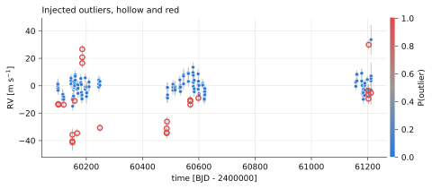
koloa.periodogram Périodogrammes qui tiennent compte des valeurs aberrantes
Une planète de K = 5 m/s à 16.65 d, cachée derrière de mauvaises visites et des pointes isolées. Le GLS et le périodogramme gaussien à vraisemblance profilée culminent ailleurs ; le périodogramme robuste aux valeurs aberrantes (OAP) culmine à la période de la planète. La fenêtre spectrale, les alias et un jackknife qui retire une visite à la fois indiquent dans quelle mesure se fier à un pic.
# numpy, and koloa's figures, series, log (timestamped lines, 'value' for
# a number), periodograms and simulation
from pathlib import Path
import numpy as np
from koloa import plotting as kplot
from koloa.data import RVData
from koloa.log import log
from koloa.periodogram import (aliases, find_peaks, frequency_grid, gls,
influence, jackknife, oap, window)
from koloa.simulate import simulate
# the repository root: this file sits two levels down, in docs/examples
ROOT = Path(__file__).resolve().parents[2]
# the period of the injected planet [days]
PERIOD = 16.65
# the times, visits and error bars of a real NIRPS sampling, with a
# circular planet (K [m/s], tp its time of periastron [days]), 7 % of
# the visits moved as a block by 6 median errors or more, 3 % of the
# exposures alone by 8 or more, and a 2 m/s jitter shared by each visit
tpl = RVData.from_csv(ROOT / 'data' / 'nirps_template.csv',
name='NIRPS template')
sim = simulate(planets=[dict(P=PERIOD, K=5.0, tp=60105.3)], template=tpl,
outliers=[dict(kind='visit', frac=0.07, amplitude=6.0),
dict(kind='spike', frac=0.03, amplitude=8.0)],
visit_jitter=2.0, seed=10)
data = sim['data']
# periods from 1.1 d to twice the baseline T, 10 grid points per 1/T
freq = frequency_grid(data.time, pmin=1.1, oversample=10)
# the generalised Lomb-Scargle periodogram, a power from 0 to 1
power = gls(data.time, data.rv, data.err, freq)
# one point per visit, a free jitter, with and without the outlier mixture
# (each gives dlnl, the gain in ln L of an offset and a sinusoid over the
# offset alone, and the fitted frac, jitter [m/s] and amp [m/s])
gauss = oap(data, freq, unit='sequence', outliers=False)
mixt = oap(data, freq, unit='sequence', outliers=True)
for label, score in (('GLS', power), ('profile, Gaussian', gauss['dlnl']),
('OAP, outlier-aware', mixt['dlnl'])):
# the grid index of the highest peak
best = find_peaks(freq, score, npeaks=1)[0]
log(f'{label:19s} best peak at {1 / freq[best]:7.3f} d', 'value')
# the grid point nearest the planet's frequency
idx = np.argmin(np.abs(freq - 1 / PERIOD))
log(f'at {PERIOD} d the OAP finds an outlier fraction of '
f'{mixt["frac"][idx]:.2f} and a jitter of {mixt["jitter"][idx]:.1f} m/s',
'value')
# the spectral window: what the sampling alone puts at each frequency (1
# at zero frequency)
wpow = window(data.time, freq)
log(f'window power at {PERIOD} d: {wpow[idx]:.3f} (highest '
f'{wpow.max():.2f}, at {1 / freq[np.argmax(wpow)]:.0f} d)', 'value')
# where else the planet shows: its aliases with the sidereal day, the year
# and the synodic month, those inside the grid
near = ', '.join(f'{al["period"]:.2f} d ({al["name"]})'
for al in aliases(1 / PERIOD, freq[0], freq[-1]))
log(f'aliases of {PERIOD} d: {near}')
# which visits hold up a peak: at the GLS peak and at the planet
# jackknife: the GLS with each visit left out in turn; influence: the
# power with a visit minus the power without it, here over the power
# of the peak (positive: the visit holds the peak up)
jack = jackknife(data, freq, unit='sequence')
# the visits that hold an injected outlier
bad = np.unique(data.seq[sim['outlier_mask']])
for period in (1 / freq[np.argmax(power)], PERIOD):
infl = influence(jack, freq, period) / jack['power'][
np.argmin(np.abs(freq - 1 / period))]
log(f'GLS power at {period:6.3f} d held up by the top visit: '
f'{infl.max():.0%}, by the {len(bad)} with outliers: '
f'{infl[bad].sum():+.0%}', 'value')
# koloa's web style; the two profile periodograms on the same Delta ln L
# axis, the window below, and the periods of mark dashed [days]
kplot.set_style('web')
fig = kplot.periodograms(freq, oap_gauss=gauss['dlnl'], oap_mix=mixt['dlnl'],
window_power=wpow, mark=[PERIOD],
title='A planet at 16.65 d behind bad visits')
fig.axes[0].legend(loc='upper right', ncol=2) # clear of the peak
path = kplot.savefig(fig, str(ROOT / 'docs/figures/examples/periodogram.svg'))
log(f'figure: {Path(path).relative_to(ROOT)}')260929 08:43:38.15 | GLS best peak at 1.699 d260929 08:43:38.15 | profile, Gaussian best peak at 1.699 d260929 08:43:38.15 | OAP, outlier-aware best peak at 16.653 d260929 08:43:38.15 | at 16.65 d the OAP finds an outlier fraction of 0.14 and a jitter of 1.7 m/s260929 08:43:38.16 | window power at 16.65 d: 0.094 (highest 0.52, at 506 d)260929 08:43:38.16 | aliases of 16.65 d: 17.45 d (1 year), 15.92 d (1 year), 38.17 d (1 month), 10.65 d (1 month)260929 08:43:38.20 | GLS power at 1.699 d held up by the top visit: 21%, by the 9 with outliers: +59%260929 08:43:38.20 | GLS power at 16.650 d held up by the top visit: 12%, by the 9 with outliers: -55%260929 08:43:38.32 | figure: docs/figures/examples/periodogram.svg
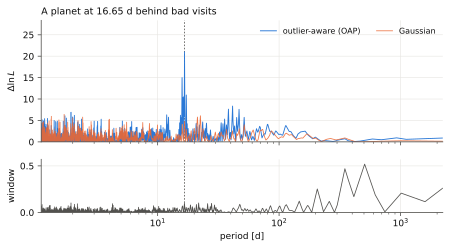
koloa.fip La probabilité d'inclusion fausse robuste aux valeurs aberrantes
oafip échantillonne jusqu'à kmax signaux, une gigue de visite, ainsi que des valeurs aberrantes ponctuelles et des visites aberrantes ; fip_comparison donne la FIP à un signal avec un bruit fixé, sans écrêtage, avec un écrêtage doux et avec un écrêtage dur. Les chaînes sont courtes ici : une véritable analyse utilise les valeurs par défaut (deux chaînes de 1500 balayages).
# numpy, and koloa's figures, series, FIPs, log (timestamped lines,
# 'value' for a number), frequency grid and window, and simulation
from pathlib import Path
import numpy as np
from koloa import plotting as kplot
from koloa.data import RVData
from koloa.fip import fip_comparison, oafip
from koloa.log import log
from koloa.periodogram import frequency_grid, window
from koloa.simulate import simulate
# the repository root: this file sits two levels down, in docs/examples
ROOT = Path(__file__).resolve().parents[2]
# the period of the injected planet [days]
PERIOD = 16.65
# a real NIRPS sampling lends its times, visits and error bars
tpl = RVData.from_csv(ROOT / 'data' / 'nirps_template.csv',
name='NIRPS template')
# a circular planet, K [m/s] and tp its time of periastron [days]; 7 % of
# the visits moved as a block by 6 median errors or more, 3 % of the
# exposures alone by 8 or more; a 2 m/s jitter shared by each visit
sim = simulate(planets=[dict(P=PERIOD, K=5.0, tp=60105.3)], template=tpl,
outliers=[dict(kind='visit', frac=0.07, amplitude=6.0),
dict(kind='spike', frac=0.03, amplitude=8.0)],
visit_jitter=2.0, seed=10)
# the series, and which exposures were made outliers (True: bad)
data, truth = sim['data'], sim['outlier_mask']
# one grid for every method: periods from 1.1 d to twice the baseline,
# 10 points per peak width 1/T
freq = frequency_grid(data.time, pmin=1.1, oversample=10)
# the one-signal FIP with the noise held fixed: no clip, a 3-sigma soft
# clip and a 3-sigma hard clip (the keys gaussian, soft and hard)
fips = fip_comparison(data, freq=freq)
# koloa's: up to kmax=2 signals, and outliers='both': a lone exposure or
# a whole visit can be one; one chain of 100 burn-in and 400 recorded
# sweeps (defaults: two of 300 and 1500); progress=False: no log lines
fips['koloa'] = oafip(data, kmax=2, outliers='both', freq=freq, nsweep=400,
nburn=100, nchains=1, progress=False)
# best(): the most significant peak (its period [days], fip, window...);
# fip_at: the FIP of the interval, about 1/T wide, around a period
for res in fips.values():
log(f'{res.method:30s} best {res.best()["period"]:7.3f} d, FIP '
f'{res.best()["fip"]:.1e}; at {PERIOD} d: {res.fip_at(PERIOD):.1e}',
'value')
koloa = fips['koloa']
# the probability of each number of signals, the best peaks, and the
# expected number of outlier exposures
for line in koloa.summary().split('\n'):
log(line)
# outlier_prob: the probability that each exposure is bad (an outlier
# itself or in an outlier visit), averaged over the chain
flagged = koloa.outlier_prob > 0.5
log(f'flagged: {np.sum(flagged & truth)} of the {truth.sum()} bad exposures, '
f'{np.sum(flagged & ~truth)} of the {np.sum(~truth)} good ones', 'value')
# koloa's web style; then the window of the sampling and -log10 FIP of
# each method, with the periods of mark drawn dashed [days]
kplot.set_style('web')
fig = kplot.periodograms(freq, window_power=window(data.time, freq),
fips=fips, mark=[PERIOD])
path = kplot.savefig(fig, str(ROOT / 'docs/figures/examples/fip.svg'))
log(f'figure: {Path(path).relative_to(ROOT)}')260929 08:41:28.79 | gaussian, no clip best 22.507 d, FIP 4.8e-01; at 16.65 d: 1.0e+00260929 08:41:28.79 | gaussian, 3-sigma soft clip best 16.628 d, FIP 1.1e-01; at 16.65 d: 1.1e-01260929 08:41:28.79 | gaussian, 3-sigma hard clip best 16.628 d, FIP 1.1e-04; at 16.65 d: 1.1e-04260929 08:41:28.79 | mixture (both outliers) best 16.628 d, FIP 1.5e-03; at 16.65 d: 1.5e-03260929 08:41:28.79 | FIP (mixture (both outliers))260929 08:41:28.79 | number of signals: P(k=0)=0, P(k=1)=0.435, P(k=2)=0.565260929 08:41:28.79 | P = 16.6282 d FIP = 1.52e-03 window = 0.098260929 08:41:28.79 | P = 1114.0885 d FIP = 9.40e-01 window = 0.204260929 08:41:28.79 | P = 15.7803 d FIP = 9.41e-01 window = 0.024260929 08:41:28.79 | P = 16.2878 d FIP = 9.57e-01 window = 0.001260929 08:41:28.79 | P = 195.4541 d FIP = 9.76e-01 window = 0.121260929 08:41:28.79 | expected outlier points (both model): 22.2260929 08:41:28.79 | flagged: 17 of the 17 bad exposures, 0 of the 164 good ones260929 08:41:29.08 | figure: docs/figures/examples/fip.svg
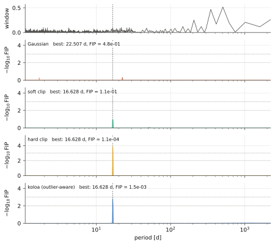
koloa.fit Éléments orbitaux par MCMC
mcmc_orbits trouve le maximum a posteriori, puis échantillonne la loi a posteriori avec emcee ; les visites peuvent être aberrantes. Le résultat donne chaque tirage en unités physiques (posterior), leurs résumés (orbits) et les temps d'autocorrélation (diagnostics). Les chaînes sont courtes ici : par défaut, l'échantillonnage se poursuit jusqu'à ce que la chaîne couvre 50 temps d'autocorrélation.
# numpy, and koloa's figures, series, model and MCMC, log (timestamped
# lines, 'value' for a number) and simulation
from pathlib import Path
import numpy as np
from koloa import plotting as kplot
from koloa.data import RVData
from koloa.fit import RVModel, mcmc_orbits
from koloa.log import log
from koloa.simulate import simulate
# the repository root: this file sits two levels down, in docs/examples
ROOT = Path(__file__).resolve().parents[2]
# the mass of the star, for m sin i
MSTAR = 0.6 # solar masses
# an eccentric planet (P = 11.2 d, K = 6 m/s, e = 0.3) and 7% bad visits
# on a real NIRPS sampling: omega [rad] is the argument of periastron of
# the star and tp the time of periastron [days]; the bad visits move by
# 6 median errors or more, and a 2 m/s jitter is shared by each visit
tpl = RVData.from_csv(ROOT / 'data' / 'nirps_template.csv',
name='NIRPS template')
sim = simulate(planets=[dict(P=11.2, K=6.0, e=0.3, omega=np.radians(60),
tp=60100.0)], template=tpl,
outliers=[dict(kind='visit', frac=0.07, amplitude=6.0)],
visit_jitter=2.0, seed=4)
data = sim['data']
# the maximum a posteriori, then the posterior with emcee: [11.2] holds
# the starting period of each orbit [days] (free within +-10 %), each
# eccentric by default; the outlier mixture, with a whole visit as the
# outlier unit (unit='sequence'); nsteps and nburn: at least that many
# steps per walker, and thrown away; the chain grows towards 50
# autocorrelation times, up to max_steps (by default 20 x nsteps)
post = mcmc_orbits(data, [11.2], unit='sequence', nsteps=1500, nburn=500,
max_steps=3000, quiet=True)
# the model, each orbit with its errors, the noise and the sampler
for line in post.summary(mstar=MSTAR).split('\n'):
log(line, 'value')
# orbits(): per orbit, (median, minus, plus) of P, K, e, omega [deg], tp,
# tc and, given the stellar mass, m sin i [Earth masses]
orbit = post.orbits(mstar=MSTAR)[0]
log(f'omega = {orbit["omega"][0]:.0f} +{orbit["omega"][2]:.0f}/'
f'-{orbit["omega"][1]:.0f} deg (injected: P = 11.2 d, K = 6 m/s, '
f'e = 0.3, omega = 60 deg)', 'value')
# posterior(): every draw kept (one step in 10 of each walker) in physical
# units, named by orbit (K_0, e_0, ...); entry j of each is one draw
draws = post.posterior(mstar=MSTAR)
log(f'{len(draws["K_0"])} draws; P(e > 0.1) = '
f'{np.mean(draws["e_0"] > 0.1):.2f}, P(K > 5 m/s) = '
f'{np.mean(draws["K_0"] > 5):.2f}', 'value')
# diagnostics: the walkers, the steps kept after the burn-in, and the
# longest autocorrelation time, tau_max [steps]
diag = post.diagnostics
log(f'{diag["nwalkers"]} walkers, {diag["nkept"]} steps kept; 50 '
f'autocorrelation times would take {50 * diag["tau_max"]:.0f}', 'value')
# the same orbit without outliers in the noise model (maximum a posteriori)
# likelihood='gaussian': no outlier; nstart=1: one start per candidate
# period (the default 4 also turns the periastron around); K comes as
# (value, minus, plus) [m/s], the errors from the curvature at the
# maximum
gauss = RVModel(data, [dict(period=11.2, eccentric=True)],
likelihood='gaussian').fit(nstart=1, quiet=True)
kval = gauss.orbits()[0]['K']
# the error on K with outliers allowed for: the mean of the two sides of
# its posterior interval
kerr = 0.5 * (orbit['K'][1] + orbit['K'][2])
log(f'gaussian: K = {kval[0]:.2f} +- {kval[1]:.2f} m/s, e = '
f'{gauss.orbits()[0]["e"][0]:.2f}: the bad visits pull the orbit, '
f'and the error on K is {kval[1] / kerr:.1f} times that with outliers '
f'allowed for', 'value')
# koloa's web style; the phase fold of every exposure (level='point'),
# with binned means and the 1-sigma envelope over the draws
kplot.set_style('web')
fig = kplot.phase(post, level='point')
fig.axes[0].legend(loc='lower right') # a bad visit sits upper right
path = kplot.savefig(fig, str(ROOT / 'docs/figures/examples/fit.svg'))
log(f'figure: {Path(path).relative_to(ROOT)}')260929 08:49:23.58 | 1 orbit(s), mixture (sequence outliers): log posterior -520.22, BIC 1089.4260929 08:49:23.58 | orbit 0: P = 11.1968 +0.0062/-0.0072 d, K = 5.81 +0.60/-0.61 m/s, e = 0.295, m sin i = 13.76 Me260929 08:49:23.58 | acceleration of the star: -0.010 (-0.391 +0.378) m/s/yr at tref260929 08:49:23.58 | log_jit_inst: -2.801 (-1.959 +1.959) -> 0.061260929 08:49:23.58 | log_sjit: 0.734 (-0.180 +0.167) -> 2.082260929 08:49:23.58 | logit_f: -2.616 (-0.471 +0.417) -> 0.068260929 08:49:23.58 | log_W: 3.523 (-0.279 +0.354) -> 33.888260929 08:49:23.58 | expected outlier points: 14.4260929 08:49:23.58 | emcee (de moves): acceptance 0.21, longest autocorrelation time 52 steps (ye_0), 2112 effective samples [fewer than 50 autocorrelation times]260929 08:49:23.59 | omega = 76 +20/-20 deg (injected: P = 11.2 d, K = 6 m/s, e = 0.3, omega = 60 deg)260929 08:49:23.71 | 11000 draws; P(e > 0.1) = 0.95, P(K > 5 m/s) = 0.91260929 08:49:23.71 | 44 walkers, 2500 steps kept; 50 autocorrelation times would take 2604260929 08:49:25.69 | gaussian: K = 7.53 +- 1.51 m/s, e = 0.36: the bad visits pull the orbit, and the error on K is 2.5 times that with outliers allowed for260929 08:49:25.87 | figure: docs/figures/examples/fit.svg
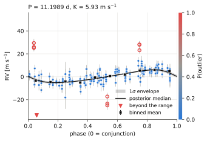
koloa.instruments Plusieurs instruments : une planète, un bruit propre à chacun
Un instrument dans le proche infrarouge (visites de trois poses) et un instrument dans l'optique (deux poses par nuit) voient la même planète (P = 9.3 d, K = 4 m/s), ainsi que l'activité de l'étoile, plus faible dans le proche infrarouge : un GP Matern-3/2 de 1.5 m/s dans le proche infrarouge et de 4 m/s dans l'optique, identique pour toutes les poses d'une même visite. Deux visites dans le proche infrarouge sont mauvaises, décalées de 8 m/s.
# numpy, and koloa's figures, series, model and priors, log (timestamped
# lines, 'value' for a number) and simulation
from pathlib import Path
import numpy as np
from koloa import plotting as kplot
from koloa.data import RVData
from koloa.fit import Prior, RVModel
from koloa.log import log
from koloa.simulate import activity_signal, keplerian_signal, observing_times
# the repository root: this file sits two levels down, in docs/examples
ROOT = Path(__file__).resolve().parents[2]
# the random numbers of the photon noise
rng = np.random.default_rng(3)
# one circular orbit: P and tp, the time of periastron [days], and K [m/s]
planet = [dict(P=9.3, K=4.0, tp=0.0)]
# each instrument: its name, visits, exposures per visit, error bar
# [m/s], amplitude of the activity [m/s] and seed
series = []
for name, nvis, nexp, err, sigma, seed in (('NIR', 50, 3, 2.0, 1.5, 1),
('VIS', 60, 2, 1.0, 4.0, 2)):
# a drawn campaign over 600 days: seasons, one visit a night, nexp
# exposures 15 minutes apart; the times in days
time = observing_times(nvisits=nvis, per_visit=nexp, baseline=600,
seed=seed)
# one draw of a Matern-3/2 GP, pars the logs of its sigma [m/s] and of
# its length [days]; at 8 days, the exposures of a visit share it
act = activity_signal(time, kernel='matern32', seed=seed + 10,
pars=np.log([sigma, 8.0]))
# the orbit, the activity and the photon noise [m/s]
rv = keplerian_signal(time, planet) + act + err * rng.normal(size=len(time))
series.append((time, rv, np.full(len(time), err), np.full(len(time), name)))
# both instruments in one series, in time order; RVData finds the visits
# of each instrument and takes its median velocity out
time, rv, err, inst = (np.concatenate(parts) for parts in zip(*series))
order = np.argsort(time)
data = RVData(time[order], rv[order], err[order], inst=inst[order])
# two bad near-infrared visits: every exposure moved by 8 m/s
# (the 11th and the 31st visits of the NIR instrument)
nir_visits = np.unique(data.seq[data.inst == 'NIR'])
for visit in nir_visits[[10, 30]]:
data.rv[data.seq == visit] += 8.0
log(f'{data.n} exposures in {data.nseq} visits: '
+ ', '.join(f'{name} {np.sum(data.inst == name)}'
for name in data.instruments), 'info')
# the orbit to fit: its period starts at 9.3 days, free from 9.0 to 9.6;
# bad: the two visits made bad, to score the flags
period = dict(period=9.3, period_range=(9.0, 9.6))
bad = set(nir_visits[[10, 30]])
def report(label, fit):
"""K, the noise, and the near-infrared visits flagged"""
model = fit.model
# the jitters in m/s, from their logs: log_jit_<inst>, white, one per
# instrument; log_sjit (or log_sjit_<inst>), shared by a visit
noise = ', '.join(f'{name[4:]} {np.exp(fit.theta[model.index[name]]):.1f}'
for name in model.names
if name.startswith(('log_sjit', 'log_jit')))
# a visit is flagged when its exposures are more likely bad than not
flagged = {visit for visit in nir_visits
if np.mean(fit.outlier_prob[data.seq == visit]) > 0.5}
# K as (value, minus, plus) [m/s]
kval = fit.orbits()[0]['K']
log(f'{label}: K = {kval[0]:.2f} +- {0.5 * (kval[1] + kval[2]):.2f} m/s;'
f' jitters [m/s] {noise}; bad NIR visits flagged '
f'{len(flagged & bad)} of 2, good ones {len(flagged - bad)}', 'value')
# every fit keeps the defaults: the outlier mixture, where a lone exposure
# or a whole visit can be an outlier, a white jitter per instrument and
# a straight trend; nstart=2: the number of starts (4 by default)
# seq_jitter=True: one visit jitter for both instruments
one = RVModel(data, [period], seq_jitter=True).fit(nstart=2, quiet=True)
report('one visit jitter', one)
# seq_jitter='instrument': a visit jitter per instrument (sjit_NIR, ...)
per = RVModel(data, [period], seq_jitter='instrument').fit(nstart=2,
quiet=True)
report('a visit jitter per instrument', per)
# a list of GPs, one per instrument, each with its own parameters
# (gp_NIR_log_sigma, ...); a Prior on log_length keeps the length from
# 2 to 200 days, uniform in its log
gps = [dict(kernel='matern32', instruments=[name],
prior={'log_length': Prior('uniform', np.log(2.0),
np.log(200.0))})
for name in ('NIR', 'VIS')]
# with a GP, the fit alternates the parameters and the outlier flags
# (the slow part of this example)
withgp = RVModel(data, [period], seq_jitter='instrument',
gp=gps).fit(nstart=2, quiet=True)
report('and a GP per instrument', withgp)
# a few words on the model
log(withgp.model.describe(), 'info')
# the GP of each instrument, from its log parameters
for name in ('NIR', 'VIS'):
sigma = np.exp(withgp.theta[withgp.model.index[f'gp_{name}_log_sigma']])
length = np.exp(withgp.theta[withgp.model.index[f'gp_{name}_log_length']])
log(f' GP {name}: sigma = {sigma:.1f} m/s, length = {length:.0f} d '
f'(simulated: {1.5 if name == "NIR" else 4.0} m/s, 8 d)', 'value')
# pyplot for the figure (noqa: E402 lets flake8 accept an import below code)
import matplotlib.pyplot as plt # noqa: E402
# koloa's web style, and two panels side by side that share the velocity
# axis (figsize in inches)
kplot.set_style('web')
fig, axes = plt.subplots(1, 2, figsize=(8.0, 3.3), sharey=True)
for ax, name in zip(axes, ('NIR', 'VIS')):
# each exposure (level='point') folded on the joint fit, everything but
# the orbit taken out; select: this instrument only; ylim [m/s]:
# points beyond it sit at its edge; no legend nor colour bar here
kplot.phase(withgp, level='point', ax=ax, title=name,
select=data.inst == name, ylim=(-15.0, 25.0), legend=False,
colorbar=False)
axes[1].set_ylabel('')
# one colour bar of the outlier probability for both panels (a private
# helper of koloa.plotting)
kplot._colorbar(fig, list(axes), kplot.reliability_cmap())
path = kplot.savefig(fig, str(ROOT / 'docs/figures/examples/instruments.svg'))
log(f'figure: {Path(path).relative_to(ROOT)}')260929 09:19:02.45 | 270 exposures in 110 visits: NIR 150, VIS 120260929 09:20:09.27 | one visit jitter: K = 3.71 +- 0.95 m/s; jitters [m/s] jit_NIR 0.7, jit_VIS 0.0, sjit 2.2; bad NIR visits flagged 1 of 2, good ones 0260929 09:20:57.73 | a visit jitter per instrument: K = 3.81 +- 0.24 m/s; jitters [m/s] jit_NIR 0.9, jit_VIS 0.0, sjit_NIR 0.0, sjit_VIS 3.2; bad NIR visits flagged 2 of 2, good ones 0260929 09:24:48.06 | and a GP per instrument: K = 3.84 +- 0.22 m/s; jitters [m/s] jit_NIR 0.8, jit_VIS 0.0, sjit_NIR 0.0, sjit_VIS 0.0; bad NIR visits flagged 2 of 2, good ones 0260929 09:24:48.06 | 1 orbit(s), GP matern32 (NIR), matern32 (VIS), mixture (both outliers)260929 09:24:48.06 | GP NIR: sigma = 0.5 m/s, length = 12 d (simulated: 1.5 m/s, 8 d)260929 09:24:48.06 | GP VIS: sigma = 3.9 m/s, length = 9 d (simulated: 4.0 m/s, 8 d)260929 09:24:48.71 | figure: docs/figures/examples/instruments.svg
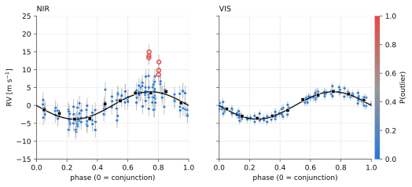
koloa.diagnostics Le test du canard
duck_test pose à un signal toutes les questions que connaît koloa : significativité compte tenu des valeurs aberrantes, robustesse à l'égard des visites individuelles, cohérence sur la durée de la campagne, forme, et puissance dans les indicateurs d'activité. Ici, sur une planète simulée à 11.2 d avec de mauvaises visites, sans le test d'absorption par un GP, le plus lent (gp=True l'ajoute) ; la simulation n'a pas d'indicateurs d'activité, si bien que leur vérification n'a rien à trouver.
# koloa's series, the duck test and one of its checks, the two FIPs, the
# log (timestamped lines, 'value' for a number) and the simulation
from pathlib import Path
from koloa.data import RVData
from koloa.diagnostics import coherence, duck_test
from koloa.fip import fip_single, oafip
from koloa.log import log
from koloa.simulate import simulate
# the repository root: this file sits two levels down, in docs/examples
ROOT = Path(__file__).resolve().parents[2]
# the period of the signal put to the test [days]
PERIOD = 11.2
# a circular planet at PERIOD (K = 5 m/s, tp its time of periastron
# [days]) on a real NIRPS sampling, 7 % of the visits moved as a block
# by 6 median errors or more, and a 2 m/s jitter shared by each visit
# (a real series also brings its activity indicators, in which the duck
# test looks for power at the period; ex_data.py reads some)
tpl = RVData.from_csv(ROOT / 'data' / 'nirps_template.csv',
name='NIRPS template')
sim = simulate(planets=[dict(P=PERIOD, K=5.0, tp=60100.0)], template=tpl,
outliers=[dict(kind='visit', frac=0.07, amplitude=6.0)],
visit_jitter=2.0, seed=1)
data = sim['data']
# the one-signal FIP with a fixed jitter, and koloa's (short chain)
# fip_single: the jitter is the excess of the robust rms over the median
# error, and nothing is sampled; oafip: at most kmax=1 signal, whole
# visits as the outliers (outliers='sequence'), one chain of 100 burn-in
# and 400 recorded sweeps (defaults: two chains of 300 and 1500), no
# progress lines
gauss = fip_single(data)
koloa = oafip(data, kmax=1, outliers='sequence', nsweep=400, nburn=100,
nchains=1, progress=False)
# every check at PERIOD: fipres, the outlier-aware FIP, gives the
# significance and the outlier probability of each exposure; gauss_fip
# is quoted beside it; gp=False skips the GP absorption test (slow);
# unit='sequence': whole visits are the outliers of its fits and the
# units of its jackknife; quiet=True: no log lines, the report is
# printed below
report = duck_test(data, PERIOD, fipres=koloa, gauss_fip=gauss, gp=False,
unit='sequence', quiet=True)
# the report line by line, the verdict in blue
for line in report.text().split('\n'):
if line:
log(line, 'value' if line.startswith('VERDICT') else 'info')
# checks: every check made; flags: those that speak against a planet
flagged = [check['name'] for check in report.flags]
log(f'checks that flag the signal: {", ".join(flagged) or "none"} (of '
f'{len(report.checks)})', 'value')
# one of the checks on its own: amplitude and phase, season by season
# a sinusoid at PERIOD is fitted to each season (a new one after a gap of
# 60 days) on the visit means, each exposure weighted by one minus its
# outlier probability (prob)
coh = coherence(data, PERIOD, prob=koloa.outlier_prob, split='seasons')
# each chunk: its first time tmin [days], its visits, K and its error sK
# [m/s]
for chunk in coh['chunks']:
log(f' season from {chunk["tmin"]:.0f}: {chunk["nvisits"]:2d} visits, '
f'K = {chunk["K"]:.1f} +- {chunk["sK"]:.1f} m/s', 'value')
# p_vector: the p-value of a chi^2 test that amplitude and phase are the
# same in every season (a small p: they differ)
log(f'same amplitude and phase in every season: p = {coh["p_vector"]:.1e}',
'value')260929 08:41:18.42 | Duck test at P = 11.2000 d260929 08:41:18.42 | [quacks like a planet] significance: FIP = 8.06e-06 (outlier-aware), 1.16e-02 (gaussian), window power 0.003; best alias 11.551 d (1 year) FIP 1.00e+00260929 08:41:18.42 | [quacks like a planet] robustness: the most influential visit holds up 6% of the GLS power at the period260929 08:41:18.42 | [quacks like a planet] coherence: K by half: 6.5+-0.7, 5.1+-0.8 m/s (p = 1.8e-01); amplitude+phase by season p = 5.0e-01260929 08:41:18.42 | [quacks like a planet] shape: e = 0.13, Delta ln post = 0.8 over circular; consistent with a circular orbit; K = 6.05 +- 0.52 m/s (circular)260929 08:41:18.42 | [quacks like a planet] indicators: no indicator has significant power at P, 2P or 3P260929 08:41:18.42 | VERDICT: PLANET CANDIDATE: it looks, swims and quacks like a planet260929 08:41:18.42 | checks that flag the signal: none (of 5)260929 08:41:18.42 | season from 60098: 27 visits, K = 6.4 +- 0.8 m/s260929 08:41:18.42 | season from 60486: 19 visits, K = 5.7 +- 0.9 m/s260929 08:41:18.42 | season from 61158: 12 visits, K = 4.5 +- 1.2 m/s260929 08:41:18.42 | same amplitude and phase in every season: p = 5.0e-01
koloa.outliers Pourquoi une valeur aberrante est aberrante
explain_outliers compare chaque valeur aberrante d'un ajustement aux bonnes données, sur tout ce qui a été enregistré avec elle : ici les colonnes que DACE fournit pour HARPS (S/B, temps de pose, dérive de la référence simultanée, forme de la CCF) et les indicateurs d'activité. Une pose isolée est comparée aux bonnes poses de sa visite ou, seule dans sa visite, aux bonnes visites les plus proches dans le temps ; une clé est significativement décalée au-delà du seuil de Bonferroni pour le nombre de clés. Les vitesses HARPS publiques de HD 69830 à partir de 2012, ses trois planètes ajustées avec le mélange.
# koloa's figures, public DACE data, the model, the log (timestamped lines,
# 'value' for a number) and the outliers
from pathlib import Path
from koloa import plotting as kplot
from koloa.dace import rvdata
from koloa.fit import RVModel
from koloa.log import log
from koloa.outliers import explain
# the repository root: this file sits two levels down, in docs/examples
ROOT = Path(__file__).resolve().parents[2]
# the public velocities of HD 69830 from DACE, one instrument era (HARPS
# before its 2015 upgrade), with every column of DACE kept in data.meta
data = rvdata(ROOT / 'data' / 'dace' / 'HD69830_dace.csv', name='HD 69830',
instruments=['HARPS03'])
# the seasons from 2012 on (rjd = BJD - 2400000), to keep the example short
data = data.select(data.time > 56000)
log(f'{data.n} exposures in {data.nseq} visits; columns kept: '
f'{len(data.meta)}, e.g. {", ".join(sorted(data.meta)[:4])}', 'info')
# the three known planets, each period free within 1 %, with the outlier
# mixture (unit='both': a single exposure or a whole visit may be bad)
# and a straight trend; nstart=1: one start per period
planets = [dict(period=per, period_range=(0.99 * per, 1.01 * per))
for per in (8.669, 31.62, 201.0)]
fit = RVModel(data, planets, likelihood='mixture', unit='both',
trend=1).fit(nstart=1, quiet=True)
# every outlier against the good data; keys='auto' recognises HARPS from
# DACE and takes its list (and the indicators); keys=[...] takes any
# columns by name
report = explain(fit)
for line in report.text().split('\n'):
log(line, 'value')
# the first outlier: its keys, most deviant first, each with its value, the
# reference it is compared with, its z and whether it is off
for key in report.units[0]['keys'][:3]:
log(f'{key["key"]}: {key["value"]:.4g} against {key["reference"]:.4g}, '
f'z = {key["z"]:+.1f}, significant: {key["significant"]}', 'value')
# koloa's web style; the figure: outliers against keys
kplot.set_style('web')
fig = kplot.outlier_keys(report)
path = kplot.savefig(fig, str(ROOT / 'docs/figures/examples/outliers.svg'))
log(f'figure: {Path(path).relative_to(ROOT)}')260929 10:26:27.23 | left out: ESPRESSO18, ESPRESSO19, HARPS03_EGGS, HARPS15 (fewer than 5 velocities, or excluded)260929 10:26:27.40 | visits of more than 10 exposures (the longest has 47) split into consecutive ones260929 10:26:27.40 | 712 velocities in 273 visits: HARPS03 712260929 10:26:27.41 | 58 exposures in 34 visits; columns kept: 86, e.g. cal_berv, cal_drift_noise, cal_drift_rv, cal_thar_lamp_offset_ar260929 10:26:59.34 | Outliers of HD 69830 and why (p > 0.5: an outlier; keys off beyond |z| > z_crit, Bonferroni at alpha = 0.01, and rarer than 1 % of the good data)260929 10:26:59.34 |260929 10:26:59.34 | HARPS03: 58 exposures in 34 visits; 1 outlying exposure (0 whole visits and 1 single exposure), 0 borderline; 16 keys (dace list), |z| > 3.4 to be off260929 10:26:59.34 | not in the data: cal_therror, ccf_noise260929 10:26:59.34 | 2014-10-18 09:43, exposure, p = 1.00, residual -82.32 m/s (-170.5 sigma), against the good visits nearest in time:260929 10:26:59.34 | off: contrast of the lines 56.7 against 59.9 (z -119.4); asymmetry of the CCF 0.0823 against 0.0232 (z +100.8); bisector span -175 against -64.2 (z -64.7); FWHM of the lines 6.59e+03 against 6.41e+03 (z +32.6)260929 10:26:59.34 | also unusual: Na I index (z +2.9); S/N (order 50) (z +2.2); exposure time [s] (z +2.0)260929 10:26:59.34 | contrast: 56.69 against 59.88, z = -119.4, significant: True260929 10:26:59.34 | ccf_asym: 0.08229 against 0.02324, z = +100.8, significant: True260929 10:26:59.34 | bis: -174.7 against -64.21, z = -64.7, significant: True260929 10:26:59.51 | figure: docs/figures/examples/outliers.svg
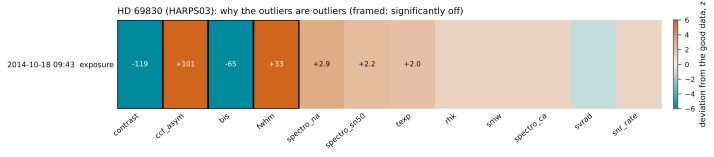
koloa.plotting Figures colorées selon la fiabilité
Chaque point arbore sa probabilité d'être une valeur aberrante : bleu pour un point fiable, gris pour un point incertain, rouge pour une valeur aberrante, et creux lorsqu'il est plus probablement aberrant que non. set_style('web') donne des fichiers SVG pour le site, set_style('paper') des fichiers PDF ; les deux styles sont clairs.
# numpy, and koloa's figures, series, model, log (timestamped lines,
# 'value' for a number) and simulation
from pathlib import Path
import numpy as np
from koloa import plotting as kplot
from koloa.data import RVData
from koloa.fit import RVModel
from koloa.log import log
from koloa.simulate import simulate
# the repository root: this file sits two levels down, in docs/examples
ROOT = Path(__file__).resolve().parents[2]
# a circular planet (P = 11.2 d, K = 5 m/s, tp its time of periastron
# [days]) on a real NIRPS sampling, 7 % of the visits moved as a block
# by 6 median errors or more, and a 2 m/s jitter shared by each visit
tpl = RVData.from_csv(ROOT / 'data' / 'nirps_template.csv',
name='NIRPS template')
sim = simulate(planets=[dict(P=11.2, K=5.0, tp=60100.0)], template=tpl,
outliers=[dict(kind='visit', frac=0.07, amplitude=6.0)],
visit_jitter=2.0, seed=1)
# the series, and which exposures were made outliers (True: bad)
data, truth = sim['data'], sim['outlier_mask']
# a circular orbit started at 11.2 days, the outlier mixture with whole
# visits as the outlier unit (unit='sequence'); the maximum a posteriori
fit = RVModel(data, [dict(period=11.2)], unit='sequence').fit(quiet=True)
# per visit: the highest outlier probability of its exposures, its mean
# time [days], and whether it was made bad
visit_prob = np.array([fit.outlier_prob[data.seq == ss].max()
for ss in range(data.nseq)])
visit_time = np.array([data.time[data.seq == ss].mean()
for ss in range(data.nseq)])
visit_bad = np.array([truth[data.seq == ss].any()
for ss in range(data.nseq)])
# per exposure: the probability that it belongs to an outlier visit
prob = fit.outlier_prob
# how many exposures wear each colour of the figures
log(f'exposures: {np.sum(prob < 0.1)} blue (P < 0.1), '
f'{np.sum((prob >= 0.1) & (prob <= 0.5))} in between, '
f'{np.sum(prob > 0.5)} red and hollow (P > 0.5)', 'value')
# the flagged visits and the visits made bad, by their mean time [days]
log(f'visits more likely outliers than not: '
f'{", ".join(f"{tt:.1f}" for tt in visit_time[visit_prob > 0.5])}',
'value')
log(f'visits made bad: '
f'{", ".join(f"{tt:.1f}" for tt in visit_time[visit_bad])}', 'value')
# the web style (this site's colours, SVG files); kplot.C holds the
# colours of the current style
kplot.set_style('web')
log(f'web style: koloa {kplot.C["koloa"]}, gaussian {kplot.C["gaussian"]}, '
f'reliable {kplot.C["reliable"]}, outlier {kplot.C["outlier"]}')
# also: timeseries, phase, periodograms, jackknife, coherence, corner,
# recovery_map and detection_limits. highlight=None: no dates on the bars
# fit=fit shows each exposure's residual of the fit, not its velocity;
# the panel below, the outlier probability of each visit
fig = kplot.sequences(data, fit.outlier_prob, fit=fit, highlight=None,
title='Simulation, every visit, after a fit at 11.2 d')
# a path without an extension: the web style adds .svg (paper: .pdf)
path = kplot.savefig(fig, str(ROOT / 'docs/figures/examples/plotting'))
log(f'figure: {Path(path).relative_to(ROOT)} (the web style adds .svg)')260929 08:43:41.00 | exposures: 166 blue (P < 0.1), 0 in between, 15 red and hollow (P > 0.5)260929 08:43:41.00 | visits more likely outliers than not: 60098.9, 60156.8, 60167.7, 60534.6, 61182.8260929 08:43:41.00 | visits made bad: 60098.9, 60167.7, 60534.6, 61182.8260929 08:43:41.00 | web style: koloa #2a78d6, gaussian #eb6834, reliable #2a78d6, outlier #e34948260929 08:43:41.11 | figure: docs/figures/examples/plotting.svg (the web style adds .svg)
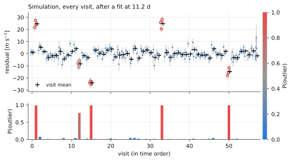
koloa.analyze Tout en un seul appel, et la commande koloa
analyze enchaîne les périodogrammes, la FIP avec chaque traitement des valeurs aberrantes, un ajustement du meilleur signal, le test du canard et toutes les figures, puis écrit un rapport texte et un résumé JSON ; ici, sur une planète simulée à 11.2 d avec de mauvaises visites. La commande koloa fait de même depuis un terminal, sur un fichier. Les réglages sont allégés ici ; avec les valeurs par défaut, il faut compter quelques minutes.
# os and tempfile for a scratch folder; koloa's analyze, its series
# (RVData), its log (timestamped lines, 'value' for a number) and its
# simulation
import os
import tempfile
from pathlib import Path
from koloa.analyze import analyze
from koloa.data import RVData
from koloa.log import log
from koloa.simulate import simulate
# the repository root: this file sits two levels down, in docs/examples
ROOT = Path(__file__).resolve().parents[2]
# the same analysis from a shell takes a csv or .rdb file (pip install -e .
# puts koloa on the path), for instance the public Kepler-21 series:
# koloa data/kepler21_harpsn_dace_drs3.3.12.csv --outdir example_analysis \
# --kmax 1 --unit sequence --nsweep 300 --nburn 100 --nchains 1 \
# --no-gp
# (add --name Kepler-21 to name the series and its files, --style web
# for SVG)
# a circular planet (P = 11.2 d, K = 5 m/s, tp its time of periastron
# [days]) on a real NIRPS sampling, 7 % of the visits moved as a block
# by 6 median errors or more, and a 2 m/s jitter shared by each visit
# (ex_simulate.py shows the recipes)
tpl = RVData.from_csv(ROOT / 'data' / 'nirps_template.csv',
name='NIRPS template')
sim = simulate(planets=[dict(P=11.2, K=5.0, tp=60100.0)], template=tpl,
outliers=[dict(kind='visit', frac=0.07, amplitude=6.0)],
visit_jitter=2.0, seed=1)
# the series (named 'simulation', which starts every file name)
data = sim['data']
# in a scratch folder, so that the example leaves nothing behind
with tempfile.TemporaryDirectory() as scratch:
os.chdir(scratch)
# outdir: the folder for the figures and the reports; kmax: the most
# signals the FIP sampler considers; unit='sequence': an outlier is
# a whole visit (the default 'both' also allows a lone exposure);
# nsweep, nburn, nchains: the FIP chains, short here (defaults 2000,
# 400 and 2); gp=False skips the slow GP test of the duck test;
# style='web' writes SVG figures ('paper', the default: PDF)
result = analyze(data, outdir='example_analysis', kmax=1,
unit='sequence', nsweep=300, nburn=100, nchains=1,
gp=False, style='web')
log(f'written: {", ".join(sorted(os.listdir("example_analysis")))}')
# out of the scratch folder before it is deleted
os.chdir(ROOT)
# a dict of every result: the numbers of the series, the periodograms,
# every FIP, the period examined, its fit, the coherence test and the
# duck test, and the paths of the figures
log(f'the result holds: {", ".join(result)}')260929 08:40:24.77 | koloa: simulation, 181 points in 58 sequences over 1114 days260929 08:40:24.77 | median error 3.19 m/s, rms 8.25 m/s, robust rms 6.32 m/s260929 08:40:24.77 | Periodograms: GLS, OAP (gaussian and outlier-aware), window260929 08:40:26.45 | FIP, one signal: no clip, soft clip, hard clip260929 08:40:26.54 | gaussian, no clip: best 11.2081 d, FIP 1.16e-02260929 08:40:26.54 | gaussian, 3-sigma soft clip: best 11.2081 d, FIP 5.70e-03260929 08:40:26.54 | gaussian, 3-sigma hard clip: best 11.1969 d, FIP 1.74e-04260929 08:40:26.54 | FIP, up to 1 signal, gaussian noise (sampled)260929 08:40:26.54 | OAFIP gaussian: 181 points, 58 sequences, 10124 frequencies, kmax = 1, 1 chain(s) of 100 + 300 sweeps260929 08:40:27.47 | OAFIP chain 1: sweep 80/400 (1 s, 1 signal(s) on, 0 point(s) in outliers)260929 08:40:28.34 | OAFIP chain 1: sweep 160/400 (2 s, 1 signal(s) on, 0 point(s) in outliers)260929 08:40:29.18 | OAFIP chain 1: sweep 240/400 (3 s, 1 signal(s) on, 0 point(s) in outliers)260929 08:40:30.08 | OAFIP chain 1: sweep 320/400 (4 s, 0 signal(s) on, 0 point(s) in outliers)260929 08:40:30.94 | OAFIP chain 1: sweep 400/400 (4 s, 0 signal(s) on, 0 point(s) in outliers)260929 08:40:30.94 | OAFIP done in 4 s260929 08:40:30.94 | peak at 11.1969 d, FIP = 9.17e-01260929 08:40:30.94 | peak at 152.6149 d, FIP = 9.55e-01260929 08:40:30.94 | peak at 1114.0885 d, FIP = 9.58e-01260929 08:40:30.94 | FIP, up to 1 signal, outlier-aware (sequence outliers)260929 08:40:30.94 | OAFIP mixture (sequence outliers): 181 points, 58 sequences, 10124 frequencies, kmax = 1, 1 chain(s) of 100 + 300 sweeps260929 08:40:32.08 | OAFIP chain 1: sweep 80/400 (1 s, 1 signal(s) on, 18 point(s) in outliers)260929 08:40:33.12 | OAFIP chain 1: sweep 160/400 (2 s, 1 signal(s) on, 12 point(s) in outliers)260929 08:40:34.18 | OAFIP chain 1: sweep 240/400 (3 s, 1 signal(s) on, 18 point(s) in outliers)260929 08:40:35.37 | OAFIP chain 1: sweep 320/400 (4 s, 1 signal(s) on, 12 point(s) in outliers)260929 08:40:36.48 | OAFIP chain 1: sweep 400/400 (6 s, 1 signal(s) on, 18 point(s) in outliers)260929 08:40:36.48 | OAFIP done in 6 s260929 08:40:36.48 | peak at 11.1969 d, FIP = 8.67e-06260929 08:40:36.48 | peak at 11.4854 d, FIP = 1.00e+00260929 08:40:36.48 | peak at 10.9011 d, FIP = 1.00e+00260929 08:40:36.48 | expected outlier points (sequence model): 16.7; with P(outlier) > 0.5: 12260929 08:40:36.48 | Fit of a circular orbit at 11.1969 d (mixture, sequence)260929 08:40:38.90 | Fit (1 orbit(s), mixture (sequence outliers)): log posterior = -509.06, 2.4 s260929 08:40:38.91 | 1 orbit(s), mixture (sequence outliers): log posterior -509.06, BIC 1056.3260929 08:40:38.91 | orbit 0: P = 11.2044 +0.0040/-0.0045 d, K = 6.05 +0.59/-0.52 m/s, e = 0.000260929 08:40:38.91 | acceleration of the star: -0.433 (-0.355 +0.355) m/s/yr at tref260929 08:40:38.91 | log_jit_inst: -5.747 (-0.635 +0.635) -> 0.003260929 08:40:38.91 | log_sjit: 0.488 (-0.264 +0.264) -> 1.629260929 08:40:38.91 | logit_f: -2.329 (-0.442 +0.442) -> 0.089260929 08:40:38.91 | log_W: 2.942 (-0.298 +0.298) -> 18.956260929 08:40:38.91 | expected outlier points: 18.1260929 08:40:39.83 | Duck test260929 08:40:49.62 | Duck test at P = 11.1969 d260929 08:40:49.62 | [quacks like a planet] significance: FIP = 8.67e-06 (outlier-aware), 1.16e-02 (gaussian), window power 0.004; best alias 10.864 d (1 year) FIP 1.00e+00260929 08:40:49.62 | [quacks like a planet] robustness: the most influential visit holds up 6% of the GLS power at the period260929 08:40:49.62 | [quacks like a planet] coherence: K by half: 6.5+-0.7, 5.1+-0.8 m/s (p = 1.8e-01); amplitude+phase by season p = 3.6e-01260929 08:40:49.62 | [quacks like a planet] shape: e = 0.13, Delta ln post = 0.8 over circular; consistent with a circular orbit; K = 6.05 +- 0.52 m/s (circular)260929 08:40:49.62 | [quacks like a planet] indicators: no indicator has significant power at P, 2P or 3P260929 08:40:49.62 | VERDICT: PLANET CANDIDATE: it looks, swims and quacks like a planet260929 08:40:49.64 | Report and 8 figures in example_analysis260929 08:40:49.64 | written: simulation_coherence.svg, simulation_jackknife.svg, simulation_periodograms.svg, simulation_phase.svg, simulation_phase_sequences.svg, simulation_report.txt, simulation_rv.svg, simulation_rv_sequences.svg, simulation_summary.json, simulation_visits.svg260929 08:40:49.64 | the result holds: summary, figures, gls, oap_gauss, oap_mix, window, fip, period, fit, coherence, duck
koloa.completeness Les planètes qu'une série aurait pu trouver
recovery_map injecte des planètes sur orbite circulaire dans la série HARPS-N publique de Kepler-21, sur une grille de périodes et de demi-amplitudes, replie la série en phase à chaque période, et compte une planète comme retrouvée lorsqu'une sinusoïde améliore la vraisemblance au-delà du seuil correspondant à une probabilité de fausse alarme de 1 %. Les injections à K = 0 mesurent les fausses alarmes : la dérive et l'activité d'une étoile réelle mettent en défaut le seuil valable pour un bruit blanc, si bien qu'une pente est ajustée à côté de chaque sinusoïde et que chaque tranche de périodes tire son seuil de ses propres injections à K = 0. Les deux vraisemblances sont cartographiées ; cette série ne présente pas de valeurs aberrantes marquées, et la carte robuste aux valeurs aberrantes coïncide avec la carte gaussienne.
# numpy for the grids, pyplot for the figure; koloa's figures, recovery
# maps, series and log (timestamped lines, 'value' for a number)
from pathlib import Path
import matplotlib.pyplot as plt
import numpy as np
from koloa import plotting as kplot
from koloa.completeness import recovery_map
from koloa.data import RVData
from koloa.log import log
# the repository root: this file sits two levels down, in docs/examples
ROOT = Path(__file__).resolve().parents[2]
# the real series, the public HARPS-N velocities of Kepler-21: each planet
# is added to it as observed, its own outliers and signals included
data = RVData.from_csv(ROOT / 'data' / 'kepler21_harpsn_dace_drs3.3.12.csv',
name='Kepler-21')
# the edges of 8 bins in period and 8 in K, evenly spaced in log
period_edges = np.geomspace(1.5, 300.0, 9) # days
amp_edges = np.geomspace(0.8, 12.0, 9) # m/s
# test='fold': the period is known; test='search' looks for the highest
# peak of a whole periodogram instead (slower)
# ninj: planets per cell, their period and K drawn log-uniformly in it,
# at a random phase; one is found when a sinusoid at its period gains
# more than the threshold in ln L; nnull: injections at K = 0, which
# count the false alarms; outliers: the outlier-aware likelihood (True)
# or the gaussian one (False); a visit is one unit (the default
# unit='sequence' fits the visit means); seed: the draws; quiet: no log
# line
# the threshold of white noise, Delta ln L > -ln(fap) = 4.6, does not hold
# on a real star: trend=1 fits a slope beside each sinusoid (and in the
# null) for the drift of the series, and calibrate=True makes the nnull
# injections at K = 0 in each period bin, whose 1 - fap quantile becomes
# the threshold of the bin when it is higher (activity raises it)
maps = {}
for label, outliers in (('gaussian', False), ('koloa', True)):
maps[label] = recovery_map(data, period_edges, amp_edges, ninj=15,
test='fold', outliers=outliers, nnull=200,
fap=0.01, trend=1, calibrate=True, seed=1,
quiet=True)
# the threshold, the false alarms, and in each period bin the K recovered
# 50 % and 90 % of the time
for line in maps['koloa'].summary().split('\n'):
log(line, 'value')
# extra holds the threshold of each period bin, and the false alarms that
# the threshold of white noise alone would have let through
extra = maps['koloa'].extra
log(f'threshold of each period bin: '
f'{", ".join(f"{val:.1f}" for val in extra["thresholds"])}; at 4.6 '
f'everywhere, false alarms {extra["false_alarm_nominal"]:.1%}', 'value')
# k_at(0.5): in each period bin, the K recovered half the time (nan when
# the bin never gets there); false_alarm: the fraction of the K = 0
# injections counted as found
for label, rmap in maps.items():
log(f'{label:8s} K recovered half the time: median over the periods '
f'{np.nanmedian(rmap.k_at(0.5)):.1f} m/s; false alarms '
f'{rmap.false_alarm:.1%}', 'value')
# koloa's web style, then two panels side by side that share the K axis
# (figsize in inches)
kplot.set_style('web')
fig, axes = plt.subplots(1, 2, figsize=(8.4, 3.3), sharey=True)
# the recovered fraction of each cell, with its 50 % (dashed) and 90 %
# contours; a single colour bar, beside the right panel
kplot.recovery_map(maps['gaussian'], ax=axes[0], colorbar=False,
title='Gaussian')
kplot.recovery_map(maps['koloa'], ax=axes[1], title='outlier-aware')
axes[1].set_ylabel('')
# savefig writes the file, closes the figure and returns the path
path = kplot.savefig(fig, str(ROOT / 'docs/figures/examples/completeness.svg'))
log(f'figure: {Path(path).relative_to(ROOT)}')260929 08:41:00.65 | Recovery map (fold test, outlier-aware, sequence units): 960 injections, threshold Delta ln L > 4.61 (fap 0.01)260929 08:41:00.65 | false alarms at K = 0: 0.008 (1600 injections)260929 08:41:00.65 | P = 2.09 d: K(50 %) = 1.93 m/s, K(90 %) = 3.37 m/s260929 08:41:00.65 | P = 4.05 d: K(50 %) = 2.21 m/s, K(90 %) = 3.37 m/s260929 08:41:00.65 | P = 7.86 d: K(50 %) = 2.40 m/s, K(90 %) = 3.99 m/s260929 08:41:00.65 | P = 15.23 d: K(50 %) = 3.10 m/s, K(90 %) = 4.73 m/s260929 08:41:00.65 | P = 29.54 d: K(50 %) = 2.27 m/s, K(90 %) = 3.32 m/s260929 08:41:00.65 | P = 57.29 d: K(50 %) = 1.97 m/s, K(90 %) = 3.99 m/s260929 08:41:00.65 | P = 111.09 d: K(50 %) = 2.85 m/s, K(90 %) = 6.10 m/s260929 08:41:00.65 | P = 215.43 d: K(50 %) = 2.77 m/s, K(90 %) = 5.60 m/s260929 08:41:00.65 | threshold of each period bin: 4.6, 4.6, 5.0, 6.7, 4.6, 4.9, 7.8, 6.1; at 4.6 everywhere, false alarms 6.7%260929 08:41:00.65 | gaussian K recovered half the time: median over the periods 2.3 m/s; false alarms 0.8%260929 08:41:00.65 | koloa K recovered half the time: median over the periods 2.3 m/s; false alarms 0.8%260929 08:41:00.94 | figure: docs/figures/examples/completeness.svg
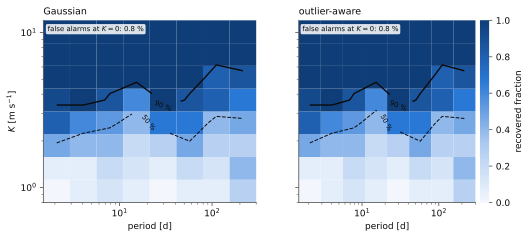
koloa.secular L'accélération d'une étoile, avec son incertitude
L'expression « accélération séculaire » a deux sens. L'accélération de l'étoile elle-même, due à un compagnon trop éloigné pour boucler une orbite, est mesurée : c'est la tendance d'un ajustement, que la fonction acceleration() donne en m/s/yr (et en m/s/yr^2 pour une tendance de degré deux) avec ses incertitudes, que la vraisemblance de koloa garde réalistes en présence de valeurs aberrantes ; companion_min_mass() donne le compagnon le moins massif capable de la produire à une séparation donnée (Torres 1999). L'accélération de perspective, mu^2 d, relève de la géométrie et se déduit de Gaia avec son incertitude ; APERO (SPIRou, NIRPS) la retire déjà dans sa correction barycentrique, si bien que la dernière partie ajoute celle de l'étoile de Barnard à une série simulée, comme la porteraient des vitesses qui la contiennent encore, et l'ajuste à côté de l'accélération de l'étoile. L'interrogation de SIMBAD et de l'archive Gaia nécessite un accès au réseau.
# koloa's series, model, log (timestamped lines, 'value' for a number),
# acceleration tools (GM_SUN and GM_JUP in m^3/s^2) and simulation
from pathlib import Path
from koloa.data import RVData
from koloa.fit import RVModel
from koloa.log import log
from koloa.secular import (GM_JUP, GM_SUN, acceleration, companion_min_mass,
gaia_astrometry, perspective_acceleration,
perspective_drift, perspective_from_astrometry)
from koloa.simulate import REALISTIC, simulate
# the repository root: this file sits two levels down, in docs/examples
ROOT = Path(__file__).resolve().parents[2]
# a real NIRPS sampling: its times, visits and error bars for the
# simulation
tpl = RVData.from_csv(ROOT / 'data' / 'nirps_template.csv',
name='NIRPS template')
# 1. a companion far out accelerates the star by 2 m/s/yr, on a series with
# a visit jitter and bad visits and spikes
# (no planet; REALISTIC: whole visits and single exposures made outliers,
# clear ones and borderline ones)
accel = 2.0
sim = simulate(template=tpl, visit_jitter=2.0, outliers=REALISTIC, seed=3)
data = sim['data']
# the drift of a constant acceleration, accel (t - tref) / 365.25 [m/s],
# added to the velocities
data = data.with_values(data.rv + perspective_drift(data.time, accel,
data.tref))
for likelihood in ('gaussian', 'mixture'):
# no orbit and a straight trend (trend=1), without or with outliers
# (unit='both': a lone exposure or a whole visit); nstart=2: the
# number of starts (4 by default)
fit = RVModel(data, [], trend=1, likelihood=likelihood,
unit='both').fit(nstart=2, quiet=True)
# the slope of the trend in m/s/yr, as (value, minus, plus): from the
# curvature at the maximum here, from the chain for a sampled fit
val, low, high = acceleration(fit)['accel']
log(f'{likelihood:8s} acceleration {val:5.2f} +- {low:.2f} m/s/yr '
f'(true {accel})', 'value')
# what it asks of a companion 2 arcsec away at the distance of Barnard's
# star (1.828 pc, from its Gaia DR3 parallax): the bound holds for any
# orbit
# (val: the acceleration of the last fit, the mixture [m/s/yr]; then the
# distance [pc] and the separation [arcsec]; the mass in solar masses)
mmin = companion_min_mass(val, 1.828, 2.0)
# GM_SUN / GM_JUP turns solar masses into Jupiter masses
log(f'a companion 2 arcsec away has at least {mmin:.5f} Msun, '
f'{mmin * GM_SUN / GM_JUP:.2f} MJup', 'value')
# 2. the perspective acceleration: Barnard's star, the classic case, from
# its Gaia DR3 proper motion and parallax (mas/yr, mas/yr, mas)
# (with no covariance given, the error it returns is zero)
acc, _ = perspective_acceleration(pmra=-801.551, pmdec=10362.394,
parallax=546.976)
log(f"Barnard's star: {acc:.3f} m/s per year of perspective", 'value')
# the same by name: SIMBAD finds the Gaia DR3 source, the Gaia archive
# gives its astrometry with errors and correlations (this needs the
# network)
astro = gaia_astrometry('GJ 699')
# mu^2 d and its error, from the covariance of the astrometry [m/s/yr]
acc, err = perspective_from_astrometry(astro)
log(f'GJ 699 is Gaia DR3 {astro["source_id"]}: perspective acceleration '
f'{acc:.4f} +- {err:.1e} m/s/yr', 'value')
# velocities that still hold it, as a barycentric correction that ignores
# the motion of the star leaves them (APERO's do not): the series of the
# first part, with its own 2 m/s/yr, plus the drift of Barnard's
# perspective
held = data.with_values(data.rv + perspective_drift(data.time, acc,
data.tref))
# perspective=(value, error): a parameter with that gaussian prior
# [m/s/yr], so that the trend takes only the star's own acceleration
fit = RVModel(held, [], trend=1, unit='both',
perspective=(acc, err)).fit(nstart=2, quiet=True)
# perspective, accel and total (their sum), each (value, minus, plus)
# [m/s/yr]
res = acceleration(fit)
log(f'fit with the Gaia prior: perspective {res["perspective"][0]:.3f}, '
f'the star itself {res["accel"][0]:+.2f} +- {res["accel"][1]:.2f} '
f'(true {accel}), together {res["total"][0]:+.2f} m/s/yr', 'value')260929 08:43:43.85 | gaussian acceleration 1.67 +- 1.34 m/s/yr (true 2.0)260929 08:43:46.18 | mixture acceleration 2.04 +- 0.46 m/s/yr (true 2.0)260929 08:43:46.18 | a companion 2 arcsec away has at least 0.00038 Msun, 0.40 MJup260929 08:43:46.18 | Barnard's star: 4.539 m/s per year of perspective260929 08:43:49.16 | GJ 699 is Gaia DR3 4472832130942575872: perspective acceleration 4.5388 +- 3.2e-04 m/s/yr260929 08:43:53.13 | fit with the Gaia prior: perspective 4.539, the star itself +2.04 +- 0.46 (true 2.0), together +6.58 m/s/yr
koloa.gp Processus gaussiens pour l'activité stellaire
Les noyaux utilisés pour modéliser l'activité (SHO, rotation, quasi-périodique, Matern-3/2, exponentiel quadratique) et un GP dense que numpy factorise en une milliseconde pour quelques centaines de points : sa vraisemblance, et sa prédiction entre les points.
# numpy, and koloa's GP tools, log (timestamped lines, 'value' for a
# number) and simulated campaigns
import numpy as np
from koloa.gp import KERNEL_PARAMS, DenseGP, kernel_matrix
from koloa.log import log
from koloa.simulate import activity_signal, observing_times
# a spotted star: an SHO of 4 m/s at a 23-day rotation, seen 80 times
# observing_times: 80 nights of one exposure, in observing seasons (240
# days a year) over 400 days; activity_signal: one draw of the GP, with
# its sigma [m/s], period [days] and quality factor Q
time = observing_times(nvisits=80, per_visit=1, baseline=400, seed=2)
truth = activity_signal(time, kernel='sho', sigma=4.0, period=23.0,
quality=3.0, seed=5)
# error bars of 1 m/s, and the data: the activity plus white noise
err = np.full(len(time), 1.0)
rv = truth + err * np.random.default_rng(1).normal(size=len(time))
# the parameters are logs of the natural units (the mixing term: a logit)
# sho: sigma, period, Q; rotation: sigma, period, Q0 = 1, dQ = 1 and a
# mix of 0.5 (logit 0); qp: sigma, period, a decay of 40 days and a
# smoothness of 0.5; matern32: sigma and a length of 10 days
pars = dict(sho=np.log([4.0, 23.0, 3.0]),
rotation=np.array([np.log(4.0), np.log(23.0), 0.0, 0.0, 0.0]),
qp=np.log([4.0, 23.0, 40.0, 0.5]), matern32=np.log([4.0, 10.0]))
# the lags 0, P/2 and P [days]
lags = np.array([0.0, 11.5, 23.0])
for kernel, par in pars.items():
# the covariance of the kernel at those lags [(m/s)^2]
cov = kernel_matrix(kernel, lags, par)
# the GP plus the noise, factorised once: diag is the noise variance
# of each point [(m/s)^2]; each point is its own visit (block) and
# there is no visit jitter (blockval=None)
gp = DenseGP(time, kernel, par, diag=err ** 2, block=np.arange(len(time)),
blockval=None)
# KERNEL_PARAMS: the names of the parameters of each kernel, in order
log(f'{kernel:9s} ({", ".join(KERNEL_PARAMS[kernel])})', 'info')
# loglike: ln N(rv | 0, C), the data taken as the residual of a mean
# model of zero
log(f' k(0, P/2, P) = {", ".join(f"{val:5.1f}" for val in cov)} '
f'(m/s)^2, ln L = {gp.loglike(rv):7.1f}', 'value')
# the SHO conditioned on the data, at the data and between them
gp = DenseGP(time, 'sho', pars['sho'], diag=err ** 2,
block=np.arange(len(time)), blockval=None)
# predict: the mean and the 1-sigma of the GP at the times given [m/s]
mean, sigma = gp.predict(rv, time)
log(f'SHO at the data: rms of (prediction - truth) = '
f'{np.std(mean - truth):.2f} m/s, predicted 1-sigma '
f'{np.median(sigma):.2f} m/s', 'value')
# 2000 times across the whole campaign, the seasonal gap included
grid = np.linspace(time[0], time[-1], 2000)
_, sigma_grid = gp.predict(rv, grid)
log(f'in the seasonal gaps the 1-sigma goes back up to '
f'{sigma_grid.max():.1f} m/s, the amplitude of the prior', 'value')260929 08:41:50.49 | sho (log_sigma, log_period, log_quality)260929 08:41:50.49 | k(0, P/2, P) = 16.0, -9.4, 5.5 (m/s)^2, ln L = -170.9260929 08:41:50.49 | rotation (log_sigma, log_period, log_q0, log_dq, logit_mix)260929 08:41:50.49 | k(0, P/2, P) = 16.0, -5.0, 3.0 (m/s)^2, ln L = -180.3260929 08:41:50.49 | qp (log_sigma, log_period, log_decay, log_smooth)260929 08:41:50.49 | k(0, P/2, P) = 16.0, 2.1, 13.6 (m/s)^2, ln L = -200.8260929 08:41:50.49 | matern32 (log_sigma, log_length)260929 08:41:50.49 | k(0, P/2, P) = 16.0, 6.5, 1.5 (m/s)^2, ln L = -195.8260929 08:41:50.49 | SHO at the data: rms of (prediction - truth) = 0.63 m/s, predicted 1-sigma 0.72 m/s260929 08:41:50.50 | in the seasonal gaps the 1-sigma goes back up to 4.0 m/s, the amplitude of the prior
koloa.kepler Orbites képlériennes
Le solveur de l'équation de Kepler, la vitesse d'une orbite dans la convention de radvel (omega est l'argument du périastre de l'étoile), les conversions entre l'instant du passage au périastre et celui de la conjonction, et m sin i à partir de la fonction de masse sans supposer m << M.
# numpy, and koloa's Kepler tools and log (timestamped lines, 'value' for
# a number)
import numpy as np
from koloa import kepler
from koloa.log import log
# Kepler's equation E - e sin E = M, solved to 1e-12 even at e = 0.95
# M, the mean anomaly [rad]: one turn in 1000 steps
mean_anomaly = np.linspace(0, 2 * np.pi, 1001)
for ecc in (0.1, 0.5, 0.95):
# E, the eccentric anomaly [rad], and how far E - e sin E misses M
eanom = kepler.eccentric_anomaly(mean_anomaly, ecc)
worst = np.max(np.abs(eanom - ecc * np.sin(eanom) - mean_anomaly))
log(f'e = {ecc:4.2f}: largest residual of the solution {worst:.1e} rad',
'value')
# an eccentric orbit: the velocity is asymmetric about zero
# P [days], e, omega [rad] (the argument of periastron of the star, as in
# radvel) and K [m/s]
period, ecc, omega, amp = 11.2, 0.3, np.radians(60), 6.0
# the time of inferior conjunction (a transit, if one is seen) [days], and
# the time of periastron that goes with it
tconj = 60000.0
tperi = kepler.tc_to_tp(tconj, period, ecc, omega)
# one period of the velocity, v = K [cos(nu + omega) + e cos(omega)], nu
# the true anomaly
time = np.linspace(tconj, tconj + period, 2001)
rv = kepler.rv_keplerian(time, period, tperi, ecc, omega, amp)
log(f'P = {period} d, e = {ecc}, K = {amp} m/s: velocity from '
f'{rv.min():.2f} to {rv.max():.2f} m/s', 'value')
# tp_to_tc goes back: the round trip should land on tconj
log(f'periastron {tconj - tperi:.3f} d before the conjunction; back: '
f'{kepler.tp_to_tc(tperi, period, ecc, omega) - tconj:+.1e} d', 'value')
# koloa's sampling basis and back
# (log P, sqrt(K) cos l, sqrt(K) sin l, sqrt(e) cos w, sqrt(e) sin w), with
# l the mean longitude at tref [days] and w = omega; basis_to_orbit
# returns (P, tp, e, omega, K)
basis = kepler.orbit_to_basis(period, tperi, ecc, omega, amp, tref=60100.0)
back = kepler.basis_to_orbit(*basis, tref=60100.0)
log(f'basis (log P, sqrt(K) cos l, sqrt(K) sin l, sqrt(e) cos w, '
f'sqrt(e) sin w) = ({", ".join(f"{val:.3f}" for val in basis)})')
log(f'and back: P = {back[0]:.4f} d, e = {back[2]:.4f}, K = {back[4]:.4f} '
f'm/s', 'value')
# m sin i: the Earth, Jupiter, and 51 Peg b (<a href="https://doi.org/10.3847/1538-4365/abe23c" target="_blank" rel="noopener">Rosenthal et al. 2021</a>, who
# give 0.464 Jupiter masses)
# each: K [m/s], P [days], e, and the mass of the star [solar masses]
for name, kval, per, eval_, mstar in (
('Earth', 0.0894, 365.256, 0.0167, 1.0),
('Jupiter', 12.47, 4332.59, 0.0489, 1.0),
('51 Peg b', 55.73, 4.2307969, 0.0042, 1.069)):
# the mass function solved without assuming m << M [Earth masses]
msini = kepler.minimum_mass(kval, per, eval_, mstar)
# the ratio of the masses turns Earth masses into Jupiter masses
log(f'{name:8s} K = {kval:>6g} m/s, P = {per:>9g} d: m sin i = '
f'{msini:6.1f} Earth masses, '
f'{msini * kepler.MEARTH_MSUN / kepler.MJUP_MSUN:.3f} Jupiter masses',
'value')260929 08:43:34.32 | e = 0.10: largest residual of the solution 8.9e-16 rad260929 08:43:34.32 | e = 0.50: largest residual of the solution 8.9e-16 rad260929 08:43:34.32 | e = 0.95: largest residual of the solution 8.9e-16 rad260929 08:43:34.32 | P = 11.2 d, e = 0.3, K = 6.0 m/s: velocity from -5.10 to 6.90 m/s260929 08:43:34.32 | periastron 0.490 d before the conjunction; back: +0.0e+00 d260929 08:43:34.32 | basis (log P, sqrt(K) cos l, sqrt(K) sin l, sqrt(e) cos w, sqrt(e) sin w) = (2.416, 1.574, 1.877, 0.274, 0.474)260929 08:43:34.32 | and back: P = 11.2000 d, e = 0.3000, K = 6.0000 m/s260929 08:43:34.32 | Earth K = 0.0894 m/s, P = 365.256 d: m sin i = 1.0 Earth masses, 0.003 Jupiter masses260929 08:43:34.32 | Jupiter K = 12.47 m/s, P = 4332.59 d: m sin i = 317.7 Earth masses, 0.999 Jupiter masses260929 08:43:34.32 | 51 Peg b K = 55.73 m/s, P = 4.2308 d: m sin i = 147.4 Earth masses, 0.464 Jupiter masses
koloa.weights Écrêtages, avec leur bilan
L'écrêtage doux classique renvoie des barres d'erreur gonflées et indique quelle part du poids il a retirée ; au-delà d'un budget de 5 %, il consigne un avertissement dans le journal et lève un KoloaWarning. L'écrêtage dur n'est là qu'à titre de comparaison : les réponses propres à koloa viennent du mélange.
# numpy, and koloa's series, log (timestamped lines, 'value' for a
# number), simulation and weights
from pathlib import Path
import numpy as np
from koloa.data import RVData
from koloa.log import log
from koloa.simulate import simulate
from koloa.weights import (hard_clip, soft_clip, student_weights,
weight_summary)
# the repository root: this file sits two levels down, in docs/examples
ROOT = Path(__file__).resolve().parents[2]
# a planet (P = 16.65 d, K = 5 m/s, tp its time of periastron [days]) on
# a real NIRPS sampling, a 2 m/s jitter shared by each visit, and 2 %
# of the exposures alone moved by 8 median errors or more: a 3-sigma
# soft clip stays within the budget
tpl = RVData.from_csv(ROOT / 'data' / 'nirps_template.csv',
name='NIRPS template')
planet = [dict(P=16.65, K=5.0, tp=60105.3)]
sim = simulate(planets=planet, template=tpl,
outliers=[dict(kind='spike', frac=0.02, amplitude=8.0)],
visit_jitter=2.0, seed=10)
# the series, and which exposures were made outliers (True: bad)
data, truth = sim['data'], sim['outlier_mask']
# soft_clip: the residual of a straight line in time, refitted over 5
# passes; a weight is kept within clip robust sigma and falls as
# (clip / z)^2 beyond, handed back as inflated error bars (err) with the
# factor of each point, the fraction of the weight removed and the
# number of points down-weighted (ndown)
soft = soft_clip(data.time, data.rv, data.err, clip=3.0)
# the exposures whose weight was cut
down = soft['factor'] < 1
log(f'a few spikes: {soft["ndown"]} exposures down-weighted '
f'({np.sum(down & truth)} of the {truth.sum()} spikes), '
f'{soft["removed"]:.1%} of the weight removed', 'value')
# the same planet and sampling with 7% bad visits and 3% spikes: over the
# budget (bad visits of 6 median errors or more, spikes of 8 or more)
sim = simulate(planets=planet, template=tpl,
outliers=[dict(kind='visit', frac=0.07, amplitude=6.0),
dict(kind='spike', frac=0.03, amplitude=8.0)],
visit_jitter=2.0, seed=10)
sdata, truth = sim['data'], sim['outlier_mask']
# above 5 % of the weight removed, soft_clip logs a warning and raises a
# KoloaWarning, which Python prints with the line of the call
soft = soft_clip(sdata.time, sdata.rv, sdata.err, clip=3.0)
# the exposures whose weight was cut, and by how much
down = soft['factor'] < 1
log(f'bad visits and spikes: soft clip down-weights {down.sum()} '
f'exposures, {np.sum(down & truth)} of the {truth.sum()} outliers',
'value')
log(f' their weight factors: '
f'{", ".join(f"{val:.2f}" for val in np.sort(soft["factor"][down]))}',
'value')
# the hard clip removes points instead: the mask of those kept (a 3-sigma
# clip against a line, repeated until nothing changes, 10 passes at
# most); as factors (1 kept, 0 removed), weight_summary gives the
# fraction of the weight removed and the number of points removed
keep = hard_clip(sdata.time, sdata.rv, sdata.err, clip=3.0)
removed, nout = weight_summary(sdata.err, keep.astype(float))
log(f'bad visits and spikes: hard clip removes {nout} exposures, '
f'{removed:.1%} of the weight; {np.sum(~keep & truth)} of them are '
f'outliers', 'value')
# a Student-t of 4 degrees of freedom weights a point by (4 + 1) / (4 + z^2)
# (residuals of 1 to 10 with error bars of 1: z itself)
zval = np.array([1.0, 3.0, 6.0, 10.0])
weights = student_weights(zval, np.ones(len(zval)), dof=4.0)
log('Student-t weight at ' + ', '.join(
f'{zz:.0f} sigma: {ww:.2f}' for zz, ww in zip(zval, weights)), 'value')260929 08:43:54.50 | a few spikes: 4 exposures down-weighted (4 of the 4 spikes), 1.0% of the weight removed260929 08:43:54.50 | The 3.0-sigma soft clip removes 5.6% of the weight, above the budget of 5%. A clip this strong decides the answer; report the result with and without it, or use the mixture model, which pays for its outliers.docs/examples/ex_weights.py:63: KoloaWarning: The 3.0-sigma soft clip removes 5.6% of the weight, above the budget of 5%. A clip this strong decides the answer; report the result with and without it, or use the mixture model, which pays for its outliers. soft = soft_clip(sdata.time, sdata.rv, sdata.err, clip=3.0)260929 08:43:54.51 | bad visits and spikes: soft clip down-weights 15 exposures, 15 of the 17 outliers260929 08:43:54.51 | their weight factors: 0.06, 0.07, 0.08, 0.11, 0.16, 0.22, 0.22, 0.26, 0.29, 0.38, 0.46, 0.50, 0.62, 0.67, 0.99260929 08:43:54.51 | bad visits and spikes: hard clip removes 17 exposures, 9.0% of the weight; 16 of them are outliers260929 08:43:54.51 | Student-t weight at 1 sigma: 1.00, 3 sigma: 0.38, 6 sigma: 0.12, 10 sigma: 0.05
koloa.radvel_bridge Les valeurs aberrantes de koloa dans radvel
Un utilisateur de radvel conserve le modèle, les lois a priori et l'échantillonneur, et ne remplace qu'une classe : RVLikelihood devient OutlierRVLikelihood, avec deux paramètres de plus, la fraction et la largeur des valeurs aberrantes. Ici, les deux vraisemblances sont maximisées à partir du même point de départ sur une planète (P = 12.3 d, K = 4 m/s) avec 8 % de mauvaises visites. Le modèle de radvel comprend une gigue blanche mais pas de gigue de visite, que les ajustements propres à koloa ajoutent.
# numpy, radvel, and koloa's series, log (timestamped lines, 'value' for
# a number), radvel bridge and simulation
from pathlib import Path
import numpy as np
import radvel
from koloa.data import RVData
from koloa.log import log
from koloa.radvel_bridge import OutlierRVLikelihood, outlier_priors
from koloa.simulate import simulate
# the repository root: this file sits two levels down, in docs/examples
ROOT = Path(__file__).resolve().parents[2]
# a real NIRPS sampling with a circular planet (K [m/s], tp its time of
# periastron [days]), 8 % of the visits moved as a block by 6 median
# errors or more, and a 1.5 m/s jitter shared by each visit
tpl = RVData.from_csv(ROOT / 'data' / 'nirps_template.csv',
name='NIRPS template')
sim = simulate(planets=[dict(P=12.3, K=4.0, tp=60102.0)], template=tpl,
outliers=[dict(kind='visit', frac=0.08, amplitude=6.0)],
visit_jitter=1.5, seed=31)
# the series, and which exposures were made outliers (True: bad)
data, truth = sim['data'], sim['outlier_mask']
# radvel's own likelihood, then koloa's, which takes the visit of each
# point (seq) and makes a whole visit the unit of an outlier
for label, likelihood, extra in (
('radvel', radvel.likelihood.RVLikelihood, {}),
('radvel + koloa', OutlierRVLikelihood,
dict(seq=data.seq, unit='sequence'))):
# one planet in radvel's basis: period, time of conjunction,
# sqrt(e) cos(w), sqrt(e) sin(w) and K
params = radvel.Parameters(1, basis='per tc secosw sesinw k')
# the same start for both: e held at 0 and no trend (dvdt and curv
# held); only per1, tc1 and k1 vary
for key, val in dict(per1=12.3, tc1=60105.0, secosw1=0.0, sesinw1=0.0,
k1=3.0, dvdt=0.0, curv=0.0).items():
params[key] = radvel.Parameter(value=val, vary=key in ('per1', 'tc1',
'k1'))
# the model and the data: time [days], velocity and error [m/s]
like = likelihood(radvel.RVModel(params), data.time, data.rv, data.err,
**extra)
# the offset gamma, fitted like any parameter (radvel solves it
# analytically only with linear=True and vary=False), and the white
# jitter, starting at 2 m/s
like.params['gamma'] = radvel.Parameter(value=0.0, linear=False)
like.params['jit'] = radvel.Parameter(value=2.0)
# radvel holds the parameters as a dict and as a vector: sync them
like.vector.dict_to_vector()
# the likelihood and its priors: hard bounds keep the jitter and K
# between 0 and 50 m/s
post = radvel.posterior.Posterior(like)
post.priors += [radvel.prior.HardBounds('jit', 0.0, 50.0),
radvel.prior.HardBounds('k1', 0.0, 50.0)]
# koloa's priors on its two parameters: a beta prior on the outlier
# fraction, and hard bounds on the log of the outlier width
if likelihood is OutlierRVLikelihood:
post.priors += outlier_priors(like)
# the maximum a posteriori (scipy's Powell method)
post = radvel.fitting.maxlike_fitting(post, verbose=False)
log(f'{label:15s} P = {post.params["per1"].value:.3f} d, '
f'K = {post.params["k1"].value:.2f} m/s, '
f'jitter {post.params["jit"].value:.2f} m/s', 'value')
if likelihood is OutlierRVLikelihood:
# the probability that each point is in an outlier visit, at the
# best parameters
flagged = like.outlier_probability() > 0.5
log(f' flagged: {np.sum(flagged & truth)} of the {truth.sum()} bad '
f'exposures, {np.sum(flagged & ~truth)} of the {np.sum(~truth)} '
f'good ones', 'value')260929 08:43:43.09 | radvel P = 12.150 d, K = 3.65 m/s, jitter 6.36 m/s260929 08:43:43.11 | radvel + koloa P = 12.306 d, K = 4.39 m/s, jitter 0.00 m/s260929 08:43:43.11 | flagged: 15 of the 15 bad exposures, 6 of the 166 good ones
koloa.doppler Décalages Doppler relativistes
koloa travaille en vitesse. Lorsqu'une vitesse doit devenir un rapport de longueurs d'onde, ou qu'un décalage en pixels sur une grille logarithmique en longueur d'onde doit devenir une vitesse, ces conversions le font de manière relativiste. La formule au premier ordre (1 + v/c) commet une erreur de 1.5 m/s pour une correction barycentrique de 30 km/s.
# numpy, koloa's relativistic conversions (velocities in m/s), and the
# log (timestamped lines, 'value' for a number)
import numpy as np
from koloa.doppler import (SPEED_OF_LIGHT, logshift_to_velocity,
ratio_to_velocity, shift_wavelength,
velocity_to_logshift, velocity_to_ratio)
from koloa.log import log
# 30 km/s, the size of a barycentric correction (positive: receding)
velocity = 30.0e3
# lambda_obs / lambda_emit = sqrt((1 + v/c) / (1 - v/c)), exactly
ratio = velocity_to_ratio(velocity)
# the first-order ratio, for comparison (SPEED_OF_LIGHT in m/s)
first = 1 + velocity / SPEED_OF_LIGHT
log(f'30 km/s: ratio {ratio:.12f}, first order {first:.12f}', 'value')
# ratio_to_velocity inverts the exact formula, v = c (r^2 - 1) / (r^2 + 1):
# the velocity the first-order ratio really stands for
log(f'the first-order ratio is the shift of {ratio_to_velocity(first):.2f} '
f'm/s, {velocity - ratio_to_velocity(first):.2f} m/s short', 'value')
# the He I line at 1083.330 nm (vacuum), from a source receding at 30 km/s
# (the wavelength is multiplied by the ratio, so it keeps its unit)
log(f'1083.330 nm is observed at '
f'{shift_wavelength(1083.330, velocity):.4f} nm', 'value')
# a grid of constant step in ln(wavelength), 1e-6 (about 300 m/s a pixel)
step = 1.0e-6
# a velocity moves ln(wavelength) by atanh(v/c); over the step, in pixels
pixels = velocity_to_logshift(velocity) / step
log(f'30 km/s is a shift of {pixels:.5f} pixels; ln(1 + v/c) would give '
f'{np.log(first) / step:.5f}', 'value')
# and back: a shift of 100 pixels measured on that grid
# (v = c tanh(shift), the shift in ln(wavelength))
log(f'100 pixels is {logshift_to_velocity(100 * step):.2f} m/s', 'value')260929 08:41:19.18 | 30 km/s: ratio 1.000100074236, first order 1.000100069229260929 08:41:19.18 | the first-order ratio is the shift of 29998.50 m/s, 1.50 m/s short260929 08:41:19.18 | 1083.330 nm is observed at 1083.4384 nm260929 08:41:19.18 | 30 km/s is a shift of 100.06923 pixels; ln(1 + v/c) would give 100.06422260929 08:41:19.18 | 100 pixels is 29979.25 m/s
koloa.log Le journal
Chaque ligne qu'affiche koloa a la forme 'YYMMDD HH:MM:SS.SS | message' et, dans un terminal, sa couleur en indique la nature : vert pour ce qui se passe, bleu pour un nombre, orange pour ce qui est ignoré ou douteux, rouge pour ce qui arrête une exécution. La sortie ci-dessous a été capturée hors d'un terminal, donc sans couleurs.
# importlib and warnings from the standard library; koloa's log function,
# its warning class, and a warning that is also logged
import importlib
import warnings
from koloa.log import KoloaWarning, log, loud_warning
# the module itself, whose switch VERBOSE silences koloa (the log imported
# above is the function)
klog = importlib.import_module('koloa.log')
# the second argument is the role of the line: 'info' (the default),
# 'value', 'warn' or 'error'
log('reading the series') # green
log('median error 3.19 m/s', 'value') # blue
log('indicator dW has no errors: skipped', 'warn') # orange
log('no velocity column in the file', 'error') # red
# silence koloa: warnings and errors still get through
klog.VERBOSE = False
log('this line is not printed')
log('but a warning is', 'warn')
# and the log back on
klog.VERBOSE = True
# a warning for the human (the log) and for the code (a KoloaWarning)
# catch_warnings(record=True) collects the warnings in a list instead of
# printing them; 'always' keeps every KoloaWarning, repeats included
with warnings.catch_warnings(record=True) as caught:
warnings.simplefilter('always', KoloaWarning)
# logged in orange, then raised as a KoloaWarning
loud_warning('a sequential fit biases K low')
# each warning caught holds its category (the class) and its message
log(f'caught {len(caught)} {caught[0].category.__name__}: '
f'{caught[0].message}', 'value')260929 08:43:35.46 | reading the series260929 08:43:35.46 | median error 3.19 m/s260929 08:43:35.46 | indicator dW has no errors: skipped260929 08:43:35.46 | no velocity column in the file260929 08:43:35.46 | but a warning is260929 08:43:35.46 | a sequential fit biases K low260929 08:43:35.46 | caught 1 KoloaWarning: a sequential fit biases K low
koloa.noise Le modèle de bruit : blocs par visite et mélange pour les valeurs aberrantes
La covariance est une diagonale plus un bloc constant par visite, inversée bloc par bloc sans jamais être construite. Par-dessus, chaque pose et chaque visite est soit bonne, soit aberrante, sa variance augmentant alors de W^2, et l'on somme sur toutes les configurations. Trois poses déplacées ensemble comptent pour une seule visite aberrante ; une pointe isolée est une pose aberrante.
# numpy, and koloa's log (timestamped lines, 'value' for a number) and
# noise model
import numpy as np
from koloa.log import log
from koloa.noise import BlockCov, mixture_loglike_both
rng = np.random.default_rng(4)
# six visits of three exposures: 2 m/s photon noise, a 3 m/s visit jitter
# seq: the visit of each exposure; one jitter draw per visit, indexed by
# seq so that the three exposures of a visit share it
seq = np.repeat(np.arange(6), 3)
err = np.full(len(seq), 2.0)
resid = 2.0 * rng.normal(size=len(seq)) + 3.0 * rng.normal(size=6)[seq]
resid[seq == 4] += 25.0 # a bad visit: its exposures move together
resid[4] += 20.0 # a spike: one exposure alone, in visit 1
# V = diag(err^2) plus (3 m/s)^2 across each visit: block, the visit of
# each point, and blockval, the constant of each block [(m/s)^2]
cov = BlockCov(err ** 2, block=seq, blockval=np.full(6, 3.0 ** 2))
# the same matrix built in full, for comparison
dense = np.diag(err ** 2) + 3.0 ** 2 * (seq[:, None] == seq[None, :])
# the log determinant, block by block and dense
log(f'log|V| = {cov.logdet():.6f} (dense: {np.linalg.slogdet(dense)[1]:.6f})',
'value')
# V^-1 r, block by block (Sherman-Morrison) and dense
diff = np.max(np.abs(cov.solve(resid) - np.linalg.solve(dense, resid)))
log(f'V^-1 r: largest difference from the dense solve {diff:.1e}', 'value')
# every outlier configuration summed: the residual, the noise variance of
# each exposure [(m/s)^2], the visits and their number, the visit
# jitter squared, then the fraction and the width W [m/s] of the
# exposure outliers (_pt) and of the visit outliers (_seq)
# it returns the log likelihood of each visit, and the log probability
# that each exposure is bad (itself, or in a bad visit) and that each
# visit is an outlier
per_visit, logp_bad, logp_visit = mixture_loglike_both(
resid, err ** 2, seq, 6, 3.0 ** 2, frac_pt=0.05, width_pt=30.0,
frac_seq=0.05, width_seq=30.0)
for vis in range(6):
sel = seq == vis
log(f'visit {vis}: {" ".join(f"{val:+6.1f}" for val in resid[sel])} m/s'
f' P(visit out) {np.exp(logp_visit[vis]):.2f} P(exposure bad) '
f'{" ".join(f"{val:.2f}" for val in np.exp(logp_bad[sel]))}', 'value')
# the visits are independent: the sum is the log likelihood of the series
log(f'log likelihood, every configuration summed: {per_visit.sum():.2f}',
'value')260929 08:43:35.99 | log|V| = 37.239456 (dense: 37.239456)260929 08:43:35.99 | V^-1 r: largest difference from the dense solve 4.4e-16260929 08:43:35.99 | visit 0: -2.3 -1.3 +2.3 m/s P(visit out) 0.01 P(exposure bad) 0.01 0.01 0.02260929 08:43:35.99 | visit 1: -1.3 +14.1 -2.7 m/s P(visit out) 0.01 P(exposure bad) 0.01 1.00 0.01260929 08:43:35.99 | visit 2: -3.2 -1.7 -5.2 m/s P(visit out) 0.01 P(exposure bad) 0.01 0.01 0.02260929 08:43:35.99 | visit 3: -1.5 -1.5 +1.1 m/s P(visit out) 0.01 P(exposure bad) 0.01 0.01 0.01260929 08:43:35.99 | visit 4: +26.8 +27.2 +23.2 m/s P(visit out) 1.00 P(exposure bad) 1.00 1.00 1.00260929 08:43:35.99 | visit 5: +4.2 -4.2 +1.9 m/s P(visit out) 0.01 P(exposure bad) 0.04 0.17 0.01260929 08:43:35.99 | log likelihood, every configuration summed: -56.80
koloa.linear L'évidence analytique des modèles linéaires
Les décalages, les tendances et les deux amplitudes d'une orbite circulaire entrent linéairement dans la vitesse ; avec des lois a priori gaussiennes, on les intègre exactement. Le gain d'évidence apporté par une sinusoïde supplémentaire est un complément de Schur de taille 2 × 2, si bien qu'une grille entière de périodes ne coûte qu'un produit matriciel. C'est ce qui rend l'échantillonneur de la FIP exact et rapide.
# numpy, and koloa's linear models, log (timestamped lines, 'value' for a
# number) and noise covariance
import numpy as np
from koloa.linear import LinearModel, sinusoid_gain, weighted_lstsq
from koloa.log import log
from koloa.noise import BlockCov
# 60 random times over 300 days, error bars of 1.5 m/s, and the data: an
# offset of 2 m/s, a sinusoid of 3 m/s at 17.3 days, and the noise
rng = np.random.default_rng(3)
time = np.sort(rng.uniform(0, 300, 60))
err = np.full(len(time), 1.5)
value = (2.0 + 3.0 * np.sin(2 * np.pi * time / 17.3)
+ err * rng.normal(size=len(time)))
# an offset with a wide gaussian prior (100 m/s), integrated out
# cov: the noise covariance V, here the variances alone, on its diagonal
# (no visit blocks) [(m/s)^2]
cov = BlockCov(err ** 2)
# y = X beta + noise, with X a column of ones; prior_var: the prior
# variance of each column [(m/s)^2]; logz is the log evidence, ln Z, and
# mean the posterior mean of beta
base = LinearModel(np.ones((len(time), 1)), value, cov,
prior_var=np.array([100.0 ** 2]))
log(f'offset only: log Z = {base.logz:.2f}, offset {base.mean[0]:.2f} m/s',
'value')
# every period of a grid at once: Delta log Z of a sinusoid whose two
# amplitudes have a gaussian prior of 3 m/s
# 20000 frequencies from 1/150 to 1/1.5 per day, and the cos and sin of
# each at every time, (n x G) matrices
freq = np.linspace(1 / 150, 1 / 1.5, 20000)
cos = np.cos(2 * np.pi * np.outer(time, freq))
sin = np.sin(2 * np.pi * np.outer(time, freq))
# the products sinusoid_gain needs (V is symmetric): X^T V^-1 cos and sin
# (wdesign is V^-1 X), y^T V^-1 cos and sin (wvalue is V^-1 y), then
# cos^T V^-1 cos, sin^T V^-1 sin and cos^T V^-1 sin; tau2: the prior
# variances to try [(m/s)^2], one column of the result each
gain = sinusoid_gain(base, base.wdesign.T @ cos, base.wdesign.T @ sin,
base.wvalue @ cos, base.wvalue @ sin,
cov.quad_diag(cos), cov.quad_diag(sin),
cov.quad_diag(cos, sin), tau2=np.array([3.0 ** 2]))[:, 0]
# the frequency whose sinusoid gains the most evidence
best = int(np.argmax(gain))
log(f'{len(freq)} periods: best {1 / freq[best]:.3f} d (injected 17.3), '
f'Delta log Z = {gain[best]:.4f}', 'value')
# the same number the long way: a model with the two columns in it
# (with the same priors: 100 m/s on the offset, 3 m/s on each amplitude)
design = np.column_stack([np.ones(len(time)), cos[:, best], sin[:, best]])
full = LinearModel(design, value, cov, prior_var=np.array([1e4, 9.0, 9.0]))
log(f'from the two evidences: {full.logz - base.logz:.4f}', 'value')
# plain weighted least squares at that period: the coefficients, their
# covariance (not used) and the chi^2; K is the hypotenuse of the two
# amplitudes
coeffs, _, chi2 = weighted_lstsq(design, value, err)
log(f'least squares at that period: K = {np.hypot(*coeffs[1:]):.2f} m/s, '
f'chi2 = {chi2:.1f} for {len(time) - 3} degrees of freedom', 'value')260929 08:43:34.93 | offset only: log Z = -180.38, offset 2.05 m/s260929 08:43:34.94 | 20000 periods: best 17.385 d (injected 17.3), Delta log Z = 55.1646260929 08:43:34.94 | from the two evidences: 55.1646260929 08:43:34.94 | least squares at that period: K = 3.05 m/s, chi2 = 68.4 for 57 degrees of freedom
Les mathématiques
Les équations qui sous-tendent chaque outil. Chaque page en traite un volet : le modèle de bruit, la FIP et le calcul de son évidence, l'échantillonneur, le périodogramme et les cartes de détectabilité, les orbites et leur MCMC, le cas de nombreuses valeurs aberrantes, et l'accélération séculaire.
- Le modèle de bruitUne série comprend \(N\) vitesses \(y_i\) avec des barres d'erreur \(\sigma_i\), réparties en \(B\) visites (poses d'un même instrument séparées de moins de 0.3 d).
- La FIPSuivant Hara et al.
- Évidence des modèles linéairesÉtant donnés les indicateurs, les gigues et les emplacements actifs, les données sont gaussiennes, de moyenne \(\mathbf X\boldsymbol\beta\) et de covariance \(\mathbf V\), et \(\boldsymbol\beta \sim \mathcal N(\mathbf 0, \boldsymbol\Sigma)\) (décalages, tendance, termes de décorrélation et amplitudes de chaque emplacement actif).
- L'échantillonneurÀ chaque balayage, l'échantillonneur de Gibbs marginalisé tire conjointement, pour chaque emplacement \(j\), son état, sa fréquence et son échelon selon leur loi conditionnelle exacte (tous les paramètres linéaires étant intégrés) :
- Périodogramme et repliementLe périodogramme robuste aux valeurs aberrantes (OAP) est une vraisemblance profilée.
- Orbites et MCMCUne orbite est paramétrée par \(\ln P\), \(\sqrt K\cos\lambda\), \(\sqrt K\sin\lambda\), \(\sqrt e\cos\omega\) et \(\sqrt e\sin\omega\) (\(\lambda\) étant la longitude moyenne à l'époque de référence et \(\omega\) l'argument du périastre de l'étoile).
- Nombreuses valeurs aberrantesUn mélange peut rester bloqué là où il démarre :
- Accélération séculaireLe terme a deux sens.
- Plusieurs instrumentsAvec plusieurs instruments, chaque instrument \(j\) a son propre décalage \(\gamma_j\) et sa propre gigue blanche \(s_j\) ; les orbites, la tendance ainsi que les fractions et les largeurs des valeurs aberrantes sont communes.
Le modèle de bruit
Une série comprend \(N\) vitesses \(y_i\) avec des barres d'erreur \(\sigma_i\), réparties en \(B\) visites (poses d'un même instrument séparées de moins de 0.3 d). Le modèle s'écrit \(y_i = m(t_i;\boldsymbol\theta) + \epsilon_i\), et le bruit est gaussien, de covariance
\[ \mathbf V = \mathrm{diag}\!\left(\sigma_i^2 + s^2 + q_i W_\mathrm{p}^2\right) + \sum_{b=1}^{B} \left(s_\mathrm{v}^2 + Q_b W_\mathrm{v}^2\right) \mathbf 1_b \mathbf 1_b^\top , \]où \(s\) est une gigue blanche, \(s_\mathrm{v}\) une gigue commune aux poses d'une visite et \(\mathbf 1_b\) le vecteur indicateur de la visite \(b\), avec des indicateurs binaires \(q_i\) (la pose \(i\) est aberrante) et \(Q_b\) (la visite \(b\) est aberrante). Une pose aberrante voit sa variance augmentée de \(W_\mathrm{p}^2\) ; une visite aberrante déplace toutes ses poses d'un même décalage, de variance \(W_\mathrm{v}^2\).
À l'intérieur d'une visite, les poses sont couplées par \(s_\mathrm{v}\), si bien que leurs indicateurs sont sommés configuration par configuration : \(2^n\) configurations pour une visite de \(n\) poses. Une visite de plus de dix poses est donc prise en bloc : ses poses ne sont jamais aberrantes une à une, et la visite est acceptée ou rejetée dans son ensemble (\(Q_b\)).
Les indicateurs suivent des lois de Bernoulli, \(q_i \sim \mathcal B(f_\mathrm p)\) et \(Q_b \sim \mathcal B(f_\mathrm v)\), avec \(f \sim \mathrm{Beta}(1, 20)\) (de moyenne 4.8 %). Après sommation sur les indicateurs, la vraisemblance d'une visite est un mélange sur ses états :
\[ p(\mathbf y_b) = \sum_{Q_b \in \{0,1\}} \sum_{\mathbf q_b \in \{0,1\}^{n_b}} \Pr(Q_b)\,\Pr(\mathbf q_b)\; \mathcal N\!\left(\mathbf y_b - \mathbf m_b ;\, \mathbf 0,\, \mathbf V_b(Q_b, \mathbf q_b)\right). \]Étant donnés les indicateurs, \(\mathbf V\) est une diagonale plus un bloc de rang un par visite, et s'inverse bloc par bloc avec la formule de Sherman-Morrison : pour un bloc \(\mathbf D + a\mathbf 1\mathbf 1^\top\),
\[ \left(\mathbf D + a \mathbf 1\mathbf 1^\top\right)^{-1} = \mathbf D^{-1} - \frac{a}{1 + aS}\, \mathbf D^{-1}\mathbf 1\mathbf 1^\top\mathbf D^{-1}, \qquad \ln\left|\mathbf D + a\mathbf 1\mathbf 1^\top\right| = \ln|\mathbf D| + \ln(1 + aS), \quad S = \sum_{i \in b} d_i^{-1}. \]Aucune matrice de taille \(N^2\) n'est jamais construite. La probabilité qu'une unité soit aberrante est sa probabilité a posteriori \(\Pr(q_i = 1 \mid \mathbf y)\) ou \(\Pr(Q_b = 1 \mid \mathbf y)\), celle qui donne sa couleur à chaque point des figures.
La FIP
Suivant Hara et al. (2022), la probabilité d'inclusion vraie d'un intervalle de fréquence \(I\) est la probabilité a posteriori qu'au moins un des signaux ait sa fréquence dans \(I\), en sommant sur leur nombre \(k\) :
\[ \mathrm{TIP}_I = \sum_{k=0}^{k_\mathrm{max}} \Pr\{\exists\, i \le k : \nu_i \in I \mid \mathbf y, k\}\, \Pr\{k \mid \mathbf y\}, \qquad \mathrm{FIP}_I = 1 - \mathrm{TIP}_I . \]Un signal s'écrit \(A\cos 2\pi\nu t + B\sin 2\pi\nu t\). Le modèle comporte \(k_\mathrm{max}\) emplacements, chacun inactif, ou actif à une fréquence \(\nu_g\) de la grille (log-uniforme en période, dix points de grille par \(1/T\)) ; le nombre de signaux est uniforme sur \(0\dots k_\mathrm{max}\), de sorte qu'une configuration de \(k\) emplacements actifs a pour probabilité a priori \(p(k)/\binom{k_\mathrm{max}}{k}\). Les amplitudes de l'emplacement \(j\) sont gaussiennes de variance \(\tau_j^2\), avec \(\tau_j\) sur une échelle de douze valeurs allant de \(\tilde\sigma/\sqrt N\) à \(5\max(\sigma_\mathrm{rob}, \tilde\sigma)\) : un mélange d'échelles de lois de Rayleigh qui approche une loi a priori log-uniforme sur la demi-amplitude et garde les amplitudes conjuguées.
Le périodogramme FIP est \(\mathrm{FIP}_I\) pour des intervalles glissants de largeur \(1/T\), \(T\) étant la durée totale couverte par les données.
Évidence des modèles linéaires
Étant donnés les indicateurs, les gigues et les emplacements actifs, les données sont gaussiennes, de moyenne \(\mathbf X\boldsymbol\beta\) et de covariance \(\mathbf V\), et \(\boldsymbol\beta \sim \mathcal N(\mathbf 0, \boldsymbol\Sigma)\) (décalages, tendance, termes de décorrélation et amplitudes de chaque emplacement actif). L'évidence (vraisemblance marginale) est analytique :
\[ \ln Z = -\tfrac12\left(\mathbf y^\top\mathbf V^{-1}\mathbf y - \mathbf b^\top \mathbf K^{-1}\mathbf b\right) - \tfrac12 \ln|\mathbf V| - \tfrac12 \ln|\boldsymbol\Sigma| - \tfrac12 \ln|\mathbf K| - \tfrac N2\ln 2\pi , \] \[ \mathbf K = \mathbf X^\top\mathbf V^{-1}\mathbf X + \boldsymbol\Sigma^{-1}, \qquad \mathbf b = \mathbf X^\top\mathbf V^{-1}\mathbf y . \]Ajouter un emplacement à la fréquence \(\nu_g\), de largeur a priori \(\tau\), ajoute deux colonnes \(\mathbf C = [\cos, \sin]\). Avec \(\mathbf B = \mathbf X^\top\mathbf V^{-1}\mathbf C\) et \(\mathbf u = \mathbf C^\top \mathbf V^{-1}\mathbf y - \mathbf B^\top\mathbf K^{-1}\mathbf b\), le gain est un complément de Schur de taille 2 × 2 :
\[ \Delta\ln Z = \tfrac12\, \mathbf u^\top \mathbf S^{-1}\mathbf u - \tfrac12\ln|\mathbf S| - \ln\tau^2, \qquad \mathbf S = \mathbf C^\top\mathbf V^{-1}\mathbf C + \tau^{-2}\mathbf I - \mathbf B^\top\mathbf K^{-1}\mathbf B . \]Pour toute la grille et tous les échelons de l'échelle à la fois, cela ne coûte qu'un seul produit par la matrice des sinusoïdes, de taille \(N \times 2G\).
L'échantillonneur
Chaque balayage de l'échantillonneur de Gibbs marginalisé tire conjointement, pour chaque emplacement \(j\), son état, sa fréquence et son échelon selon leur loi conditionnelle exacte (tous les paramètres linéaires étant intégrés) :
\[ \Pr\{z_j = 1, g_j = g, m_j = m\} \propto \frac{p(k_{-j}+1)}{\binom{k_\mathrm{max}}{k_{-j}+1}}\, \pi_g\,\frac1M\, e^{\Delta\ln Z_{gm}}, \qquad \Pr\{z_j = 0\} \propto \frac{p(k_{-j})}{\binom{k_\mathrm{max}}{k_{-j}}}, \]de sorte qu'un emplacement peut sauter de n'importe quel alias à n'importe quel autre en une seule étape. Les gigues et les largeurs des valeurs aberrantes évoluent par pas de Metropolis sur leur logarithme. Les indicateurs sont tirés un à un selon leur loi conditionnelle exacte : une fois \(\boldsymbol\beta\) intégré, les données ont pour covariance \(\boldsymbol\Sigma_y = \mathbf V + \mathbf X\boldsymbol\Sigma\mathbf X^\top\), et basculer une unité (de vecteur indicateur \(\mathbf u\)) ajoute \(\delta\,\mathbf u\mathbf u^\top\), avec \(\delta = \pm W^2\), d'où, par le lemme du déterminant matriciel,
\[ \Delta\ln Z = -\tfrac12\ln(1 + \delta s) + \tfrac12\,\frac{\delta\, t^2}{1 + \delta s}, \qquad s = \mathbf u^\top\boldsymbol\Sigma_y^{-1}\mathbf u,\quad t = \mathbf u^\top\boldsymbol\Sigma_y^{-1}\mathbf y , \]avec \(\boldsymbol\Sigma_y^{-1}\) tenu à jour par une correction de rang un lorsqu'un indicateur bascule. Les fractions sont tirées selon leurs lois conditionnelles bêta.
Rao-Blackwellisation. Lors de la mise à jour d'un emplacement, la probabilité que l'intervalle \(I\) soit vide est connue exactement (nulle si un autre emplacement actif s'y trouve, sinon égale à la masse conditionnelle de l'emplacement \(j\) hors de \(I\)). C'est la moyenne de ces probabilités conditionnelles, plutôt que le décompte des états visités, qui donne la FIP : une FIP de \(10^{-8}\) est mesurée, et non arrondie à zéro. Plusieurs chaînes sont exécutées en parallèle, et l'on rapporte le \(\hat R\) du nombre de signaux et de la gigue.
Périodogramme et repliement
Le périodogramme robuste aux valeurs aberrantes (OAP) est une vraisemblance profilée. À chaque fréquence, le modèle \(c + A\cos 2\pi\nu t + B\sin 2\pi\nu t\) est ajusté par espérance-maximisation, avec une gigue libre \(s\) et le mélange. En posant \(v_i = \sigma_i^2 + s^2\) et en notant \(r_i\) les résidus, l'étape E attribue à chaque point (ou moyenne de visite) sa probabilité d'être une valeur aberrante,
\[ \gamma_i = \frac{f\,\mathcal N(r_i; 0, v_i + W^2)}{(1-f)\,\mathcal N(r_i; 0, v_i) + f\,\mathcal N(r_i; 0, v_i + W^2)}, \]l'étape M résout les équations normales pondérées, de poids \((1-\gamma_i)/v_i + \gamma_i/(v_i+W^2)\), calcule le MAP de \(f\) sous sa loi a priori bêta, et effectue un pas de l'algorithme du score de Fisher sur \(s^2\). La puissance est le gain \(\Delta\ln L(\nu)\) par rapport au même modèle sans la sinusoïde.
Les cartes de détectabilité (koloa.completeness) injectent, à des phases aléatoires, des planètes en orbite circulaire sur une grille de \((P, K)\), et replient la série à la période injectée. Sous l'hypothèse nulle, \(2\Delta\ln L\) à une fréquence donnée suit une loi \(\chi^2_2\), de sorte qu'une probabilité de fausse alarme fap donne le seuil de repliement
\[ \Delta\ln L > -\ln(\mathrm{fap}) \quad (4.6 \text{ for } 1\,\%), \]et une recherche à l'aveugle, sur \(M = T\,\Delta\nu\) fréquences indépendantes, exige que le pic le plus haut tombe à moins de \(1/T\) de l'injection, avec \(\Delta\ln L > \ln(M/\mathrm{fap})\). Des injections à \(K = 0\) mesurent le taux de fausses alarmes que donne réellement chaque seuil.
Orbites et MCMC
Une orbite est paramétrée par \(\ln P\), \(\sqrt K\cos\lambda\), \(\sqrt K\sin\lambda\), \(\sqrt e\cos\omega\) et \(\sqrt e\sin\omega\) (\(\lambda\) étant la longitude moyenne à l'époque de référence et \(\omega\) l'argument du périastre de l'étoile). Des lois a priori uniformes sur ces paramètres, à l'intérieur des disques \(K < K_\mathrm{max}\) et \(e < 0.95\), sont uniformes en \(K\), \(e\), \(\omega\) et \(\lambda\), puisque \(\mathrm d(\sqrt e\cos\omega)\,\mathrm d(\sqrt e\sin\omega) = \tfrac12\,\mathrm de\,\mathrm d\omega\). Une planète en transit reçoit, d'après ses transits, des lois a priori gaussiennes sur \(P\) et \(T_\mathrm c\).
Sans GP, le mélange est sommé exactement dans la vraisemblance, et la loi a posteriori est échantillonnée par emcee avec des mouvements d'évolution différentielle. Le temps d'autocorrélation intégré de chaque paramètre,
\[ \tau = 1 + 2\sum_{\ell=1}^{M} \rho(\ell), \qquad M = \min\{\ell : \ell \ge 5\,\tau(\ell)\}, \](l'autocorrélation \(\rho\) étant moyennée sur les marcheurs, avec la fenêtre automatique de Sokal (1997)) fixe la longueur : la chaîne est prolongée jusqu'à contenir \(50\,\tau\) pour chaque paramètre après une chauffe d'au moins \(5\,\tau\), et \(n_\mathrm{eff} = n_\mathrm{walkers}\, n_\mathrm{steps}/\tau\) est rapporté (la taille effective d'échantillon). Avec un GP, les poses sont couplées ; les indicateurs sont alors tirés selon leur loi conditionnelle exacte, obtenue en excluant une visite à la fois (Metropolis au sein de Gibbs).
La recherche du maximum a posteriori part des pics de l'OAP, chaque période étant maintenue à l'intérieur de son propre pic (\(|\Delta\nu| < 1/T\)) pendant son optimisation, car une recherche linéaire sur une plage de périodes de \(\pm10\,\%\) tombe sur des alias.
Nombreuses valeurs aberrantes
Un mélange peut rester bloqué là où il démarre : en partant de « aucune valeur aberrante », un ajustement dont la moitié des points sont aberrants garde une gaussienne large et ne signale rien. koloa ajoute des points de départ qu'aucune valeur aberrante ne peut entraîner, comme le fait polyband : la partie linéaire est ajustée sur la fraction \(k\) (70 et 50 %) des unités les moins déviantes, resélectionnées jusqu'à ce que la sélection ne change plus. Les résidus conservés suivent une gaussienne tronquée à \(|z| < q\), avec \(q = \Phi^{-1}\!\left(\tfrac{1+k}{2}\right)\), dont la dispersion est trop faible d'un facteur
\[ \frac{\mathrm{std}(r_\mathrm{kept})}{\sigma} = \sqrt{1 - \frac{2\,q\,\varphi(q)}{k}} , \](0.56 pour \(k = 0.7\)) ; la gigue est initialisée à partir du \(\sigma\) corrigé, et la fraction et la largeur des valeurs aberrantes à partir des unités écartées. La vraisemblance choisit ensuite parmi tous ces points de départ.
Une vraisemblance en t de Student (polyband, et likelihood='student' dans koloa) est l'autre mélange d'échelle de gaussiennes : chaque point est une gaussienne dont la précision suit une loi gamma,
\[ \mathcal T_\nu(r; 0, v) = \int_0^\infty \mathcal N\!\left(r; 0, v/w\right)\, \mathrm{Gamma}\!\left(w; \tfrac\nu2, \tfrac\nu2\right)\mathrm dw , \]de sorte qu'une valeur aberrante garde un poids \((\nu + 1)/(\nu + z^2)\), faible mais non nul, là où le mélange n'en accorde aucun à une unité signalée. La loi t ne peut pas décrire une visite dont les poses se décalent ensemble.
Accélération séculaire
Le terme a deux sens. Le premier est l'accélération de l'étoile elle-même, due à un compagnon trop éloigné pour parcourir une orbite complète pendant la série. Elle se mesure : la tendance d'un ajustement est un polynôme en \(\tau = (t - t_\mathrm{ref})/T\) sur la durée d'observation \(T\), et ses deux premières dérivées en \(t_\mathrm{ref}\) sont l'accélération et sa variation,
\[ \dot v_r = \frac{c_1}{T}, \qquad \ddot v_r = \frac{2\,c_2}{T^2}, \]en m/s/yr et m/s/yr\(^2\) pour \(T\) en années (koloa.secular.acceleration), avec leurs erreurs tirées de la chaîne, le tout robuste aux valeurs aberrantes grâce à la vraisemblance de koloa. Un compagnon situé à une séparation projetée \(\rho\), à une profondeur \(z\) derrière l'étoile et à une distance \(r = (\rho^2 + z^2)^{1/2}\), lui imprime le long de la ligne de visée une accélération \(G M z / r^3\), maximale en \(z = \rho/\sqrt 2\) ; une accélération exige donc, quelle que soit l'orbite, un compagnon d'une masse d'au moins (Torres 1999 ; Liu et al. 2002)
\[ M \ge \frac{\sqrt{27}}{2}\,\frac{|\dot v_r|\,\rho^2}{G} = 1.388\times10^{-5}\,M_\odot \left(\frac{d}{\mathrm{pc}}\,\frac{\rho}{\mathrm{arcsec}}\right)^2 \left|\frac{\dot v_r}{\mathrm{m\,s^{-1}\,yr^{-1}}}\right| \](companion_min_mass). Deux étoiles qui s'attirent mutuellement accélèrent dans le rapport inverse de leurs masses, et la somme de leurs accélérations, \(G(M_A + M_B)\,z/r^3\), place l'une derrière l'autre le long de la ligne de visée, à l'ambiguïté près entre les deux racines situées de part et d'autre de \(\rho/\sqrt 2\).
Le second sens est l'accélération de perspective. Une étoile qui traverse le ciel à la vitesse transverse \(v_t = \mu d\) voit sa vitesse radiale croître même à vitesse spatiale constante, à mesure que la ligne de visée tourne vers la direction de son mouvement :
\[ \dot v_r = \frac{v_t^2}{d} = \mu^2 d \quad\Longrightarrow\quad a\ [\mathrm{m\,s^{-1}\,yr^{-1}}] = C\,\frac{\mu_{\alpha*}^2 + \mu_\delta^2}{\varpi}, \qquad C = \frac{\mathrm{mas}^2\,\mathrm{pc}\cdot 10^3}{\mathrm{yr}} = 2.2982\times10^{-5}, \]avec les mouvements propres en mas/yr et la parallaxe en mas : 4.539 m/s/yr pour l'étoile de Barnard. Son erreur découle de la covariance \(\mathbf C_{\mu\mu\varpi}\) de l'astrométrie Gaia DR3, corrélations comprises :
\[ \sigma_a^2 = \mathbf g^\top \mathbf C_{\mu\mu\varpi}\, \mathbf g, \qquad \mathbf g = \frac{C}{\varpi}\left(2\mu_{\alpha*},\; 2\mu_\delta,\; -\frac{\mu_{\alpha*}^2 + \mu_\delta^2}{\varpi}\right). \]Dans un ajustement, c'est le paramètre secacc (RVModel(perspective=(a, σ))), de loi a priori \(\mathcal N(a, \sigma_a^2)\), multiplié par \((t - t_\mathrm{ref})\) ; une tendance ajustée avec lui rend compte de l'accélération de l'étoile elle-même. Les termes du second ordre, de taille relative \(3 v_r t / d\), sont négligés.
Uniquement pour des vitesses qui contiennent encore ce terme. La correction barycentrique de Wright & Eastman (2014), éq. 28, mise en œuvre dans barycorrpy, inclut le mouvement propre et la parallaxe de l'étoile, et retire donc \(a\) : APERO fournit à barycorrpy l'astrométrie Gaia EDR3 de chaque cible SPIRou et NIRPS, et les vitesses SPIRou de l'étoile de Barnard dérivent de 1.2 m/s/yr, et non de 4.5. Ajouter le terme à de telles vitesses revient à le compter deux fois.
Plusieurs instruments
Avec plusieurs instruments, chaque instrument \(j\) a son propre décalage \(\gamma_j\) et sa propre gigue blanche \(s_j\) ; les orbites, la tendance ainsi que les fractions et les largeurs des valeurs aberrantes sont communes. La gigue de visite peut être unique pour tous les instruments, ou propre à chaque instrument dont les visites comptent plusieurs poses (seq_jitter='instrument') : la constante du bloc de la visite \(b\) vaut alors \(s_{\mathrm v,\,j(b)}^2 + Q_b W_\mathrm{v}^2\), où \(j(b)\) désigne l'instrument de la visite, et un instrument dont les nuits ne comptent qu'une pose conserve sa gigue blanche, qui joue le même rôle. L'excès de bruit d'une étoile n'est pas le même pour tous les instruments : l'activité est plus faible dans le proche infrarouge que dans le visible. Une gigue de visite unique pour tous en attribue trop à l'instrument le plus calme, dont les mauvaises visites passent alors pour bonnes.
Un GP ajoute une covariance \(\mathbf K\) à \(\mathbf V\), sous l'une des trois formes suivantes :
\[ K_{ik} = k(t_i - t_k), \qquad K_{ik} = a_{j(i)}\,a_{j(k)}\,k(t_i - t_k), \qquad K_{ik} = \delta_{g(i)\,g(k)}\; k_{g(i)}(t_i - t_k). \]La première est un GP unique pour tous les instruments. La deuxième est chromatique (gp=dict(..., scale='instrument')) : un seul noyau, dont l'amplitude \(a_j\) diffère d'un instrument à l'autre, avec \(a = 1\) pour la référence. La troisième est un GP par groupe d'instruments \(g\) (gp=[dict(kernel=..., instruments=[...]), ...]), chacun avec son propre noyau et ses propres paramètres : des GP indépendants, une covariance diagonale par blocs. Le noyau de Matérn-3/2 s'écrit
\[ k(\tau) = \sigma^2 \left(1 + \frac{\sqrt 3\,|\tau|}{\ell}\right) \exp\!\left(-\frac{\sqrt 3\,|\tau|}{\ell}\right). \]Avec un GP, la covariance est dense et factorisée par Cholesky, en \(\mathcal O(N^3)\). Les paramètres sont tirés par Metropolis, et les indicateurs de valeurs aberrantes par Gibbs selon leurs lois conditionnelles exactes : la loi prédictive de chaque unité sachant tous les autres points, obtenue à partir des blocs de \(\mathbf C^{-1}\).